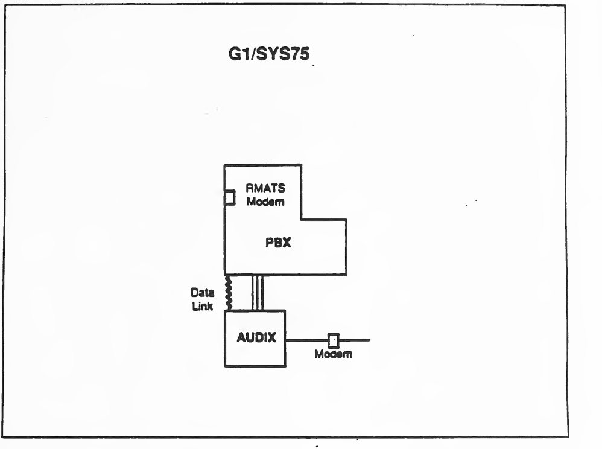

NIST IR 4816 日本語訳
英語タイトル : PBX Administrator’s Security Standards日本語タイトル : PBX 管理者のセキュリティ標準
公開日 : 1992-04-01
原文URL : https://csrc.nist.gov/pubs/ir/4816/final
原本 PDF : https://doi.org/10.6028/NIST.IR.4816
訳文 : 有志による非公式の日本語訳（AI による翻訳とレビュー）。全 354 段落を翻訳済み（原文取得日 : 2026-10-31）
[要約] NIST IR 4816 は、連邦預金保険公社（FDIC）が作成した「PBX 管理者のセキュリティ標準」を示す報告書です。この標準は、FDIC 全体の電話システムの管理者および利用者に、汎用的なセキュリティ標準一式を提供するために作られました。本書は、電話に関する方針、PBX の不正利用、PBX の管理、および今後想定される懸念事項を扱っており、PBX システム管理者の職務と責任の概要や、エンドユーザーの責任も取り上げています。NIST は、これらの標準について主張も推奨もせず、他の組織にも役立つ可能性があるため再掲するものだと述べています。
NISTIR 4816
NISTIR 4816
PBX Administrator’s Security Standards
PBX 管理者のセキュリティ標準
Developed by the Federal Deposit Insurance Corporation
連邦預金保険公社（Federal Deposit Insurance Corporation）が作成
Edward Roback
NIST Coordinator
Edward Roback
NIST コーディネーター
U.S. DEPARTMENT OF COMMERCE
Technology Administration
National Institute of Standards and Technology
Gaithersburg, MD 20899
米国商務省
技術庁
米国国立標準技術研究所（National Institute of Standards and Technology）
Gaithersburg, MD 20899
NISTIR 4816
NISTIR 4816
PBX Administrator’s Security Standards
PBX 管理者のセキュリティ標準
Developed by the Federal Deposit Insurance Corporation
連邦預金保険公社（Federal Deposit Insurance Corporation）が作成
Edward Roback
NIST Coordinator
Edward Roback
NIST コーディネーター
U.S. DEPARTMENT OF COMMERCE
Technology Administration
National Institute of Standards and Technology
Gaithersburg, MD 20899
米国商務省
技術庁
米国国立標準技術研究所（National Institute of Standards and Technology）
Gaithersburg, MD 20899
April 1992
1992年4月
U.S. DEPARTMENT OF COMMERCE
Barbara Hackman Franklin, Secretary
米国商務省
Barbara Hackman Franklin 長官
TECHNOLOGY ADMINISTRATION
Robert M. White, Under Secretary for Technology
技術庁
Robert M. White 技術担当次官
NATIONAL INSTITUTE OF STANDARDS AND TECHNOLOGY
John W. Lyons, Director
米国国立標準技術研究所
John W. Lyons 所長
Preface
序文
This National Institute of Standards and Technology Interagency Report (NISTIR) presents the Federal Deposit Insurance Corporation's (FDIC) PBX Administrator's Security Standards. It was developed to provide a generic set of security standards to phone system administrators and users throughout FDIC. The document discusses telephone policy, PBX fraud, PBX administration and anticipated future concerns. The duties and responsibilities for PBX system administrators may prove to be of particular interest to federal departments and agencies.
この米国国立標準技術研究所省庁間報告書（NISTIR）は、連邦預金保険公社（FDIC）の「PBX 管理者のセキュリティ標準」を示すものです。FDIC 全体の電話システムの管理者および利用者に、汎用的なセキュリティ標準一式を提供するために作成されました。本書は、電話に関する方針、PBX の不正利用、PBX の管理、および今後想定される懸念事項を扱っています。PBX システム管理者の職務と責任は、連邦各省庁にとって特に関心の高い内容となる可能性があります。
The National Institute of Standards and Technology (NIST) makes no claim or endorsement of these standards. However, as this material may be of use to other organizations, it is being reprinted by NIST to provide for broad public dissemination of this federally sponsored work. This publication is part of a continuing effort to assist federal agencies in accordance with NIST's mandate under the Computer Security Act of 1987.
米国国立標準技術研究所（NIST）は、これらの標準について何ら主張も推奨も行いません。ただし、この資料は他の組織にも役立つ可能性があるため、連邦政府が支援したこの成果を広く一般に頒布するために、NIST が再掲するものです。この刊行物は、1987年コンピューターセキュリティ法（Computer Security Act of 1987）に基づく NIST の責務に沿って、連邦機関を支援する継続的な取り組みの一部です。
NIST expresses its appreciation to FDIC for their kind permission to publish this report. We also wish to acknowledge the many security professionals who participated in the development of these standards, and in particular: Mr. Brian Seborg, Task Manager; Mr. Earl Bears, Chief, Voice Network Services Unit; Mr. Garrett Mussmann, Chief, Automation Security Unit; Mr. Gary Sarsfield, Chief, Branch Support Section; and Mr. John Laclede, I-NET Program Manager.
NIST は、本報告書の公表を快く許可してくださった FDIC に謝意を表します。また、これらの標準の策定に参加した多くのセキュリティ専門家、特に次の方々に謝意を表します。Mr. Brian Seborg（タスクマネージャー）、Mr. Earl Bears（音声ネットワークサービス課長）、Mr. Garrett Mussmann（自動化セキュリティ課長）、Mr. Gary Sarsfield（支所支援係長）、Mr. John Laclede（I-NET プログラムマネージャー）。
Questions regarding this publication should be addressed to the Associate Director for Computer Security, Computer Systems Laboratory, Building 225, Room B154, National Institute of Standards and Technology, Gaithersburg, MD, 20899.
本刊行物に関する質問は、Associate Director for Computer Security, Computer Systems Laboratory, Building 225, Room B154, National Institute of Standards and Technology, Gaithersburg, MD, 20899 に宛ててください。
Additional copies of this publication may be purchased through the National Technical Information Service, Springfield, VA, 22161, telephone: (703) 487-4650.
本刊行物の追加の部数は、National Technical Information Service, Springfield, VA, 22161（電話: (703) 487-4650）を通じて購入できます。
FDIC Circular 1360.3
January 24, 1992
PBX Administrator’s Security Standards
FDIC 通達 1360.3
1992年1月24日
PBX 管理者のセキュリティ標準
PBX Administrator’s Security Standards
PBX 管理者のセキュリティ標準
Table of Contents
目次
Section 1: FDIC Telephone Policy
第 1 節: FDIC の電話に関する方針
Section 2: PBX Fraud
第 2 節: PBX の不正利用
PBX Fraud History — 2-1
PBX の不正利用の歴史 — 2-1
Illegally Obtaining Authorization Codes — 2-2
認可コードの不正入手 — 2-2
Observation — 2-2
観察 — 2-2
Social Engineering Schemes — 2-2
ソーシャルエンジニアリングの手口 — 2-2
Operator Direct Dial Scheme — 2-2
オペレーター直通ダイヤルの手口 — 2-2
Call/Sell Operations — 2-3
Call/Sell 業務 — 2-3
Call Diverter Schemes — 2-3
通話転送装置（Call Diverter）の手口 — 2-3
Remote Access Fraud — 2-3
リモートアクセスの不正利用 — 2-3
Voice Mail Fraud — 2-4
ボイスメールの不正利用 — 2-4
Recent Telephone Industry Trends — 2-5
電話業界の最近の動向 — 2-5
Section 3: PBX Administration
第 3 節: PBX の管理
Summary of Responsibilities — 3-1
責任の概要 — 3-1
Duties and Responsibilities — 3-3
職務と責任 — 3-3
Know Your PBX — 3-3
自分の PBX を知る — 3-3
Monitor PBX Options and Settings — 3-3
PBX のオプションと設定を監視する — 3-3
Set Passwords — 3-3
パスワードを設定する — 3-3
Review Telephone Bills — 3-4
電話料金の請求書を確認する — 3-4
Educate Fellow Employees — 3-5
同僚の職員を教育する — 3-5
Set Time and Day Restrictions — 3-5
時間帯と曜日の制限を設定する — 3-5
Destroy Old PBX Manuals — 3-6
古い PBX マニュアルを破棄する — 3-6
Protect Corporate Telephone Books — 3-6
社内電話帳を保護する — 3-6
Know the Symptoms of PBX Fraud — 3-6
PBX の不正利用の兆候を知る — 3-6
Know the Symptoms of Voice Mail Fraud — 3-7
ボイスメールの不正利用の兆候を知る — 3-7
Protect Your Voice Mail System — 3-7
ボイスメールシステムを保護する — 3-7
Restrict DID and Outward Calling Access — 3-8
DID と外線発信のアクセスを制限する — 3-8
Prohibit DISA Use — 3-9
DISA の使用を禁止する — 3-9
Restrict Call Transfer Capabilities — 3-10
通話転送機能を制限する — 3-10
Change System Administrator Passwords — 3-11
システム管理者のパスワードを変更する — 3-11
Limit Country Code Access — 3-12
国番号へのアクセスを制限する — 3-12
Only Provide Services Required by the User — 3-13
利用者が必要とするサービスだけを提供する — 3-13
Protect Modem Pools — 3-14
モデムプールを保護する — 3-14
Restrict Direct Access to Trunks — 3-15
トランクへの直接アクセスを制限する — 3-15
Limit Incoming Call Capabilities — 3-16
着信機能を制限する — 3-16
Use Networking Services Effectively — 3-17
ネットワークサービスを効果的に使う — 3-17
Physically Protect All Equipment — 3-17
すべての装置を物理的に保護する — 3-17
Security of Diskettes, Tapes, Backups and other Computer Related Equipment — 3-18
ディスケット、テープ、バックアップなどコンピューター関連機器のセキュリティ — 3-18
Ensure Physical Security of Shared Equipment — 3-19
共用機器の物理的セキュリティを確保する — 3-19
Secure Building Cable Plant Access Points — 3-19
建物のケーブル設備のアクセスポイントを保護する — 3-19
Apply PBX Security Measures to Key Telephone Systems — 3-20
キー電話システムに PBX のセキュリティ対策を適用する — 3-20
Maintain Up-to-Date Records of Configuration — 3-20
構成の最新の記録を維持する — 3-20
Maintain Copies of Contractual Agreements — 3-21
契約書の写しを保管する — 3-21
Make End Users Aware of Their Responsibilities — 3-22
エンドユーザーに自らの責任を認識させる — 3-22
Summary of End User Responsibilities — 3-23
エンドユーザーの責任の概要 — 3-23
Report All Security Incidents — 3-24
すべてのセキュリティインシデントを報告する — 3-24
Section 4: Future Concerns
第 4 節: 今後の懸念事項
Looking Toward the Future — 4-1
将来に向けて — 4-1
Common Channel Signaling System 7 (CCSS7) — 4-1
共通線信号方式 7（Common Channel Signaling System 7、CCSS7） — 4-1
Appendix
付録
Appendix: Terms and Definitions — A-1
付録: 用語と定義 — A-1
Section 1: FDIC Telephone Policy
第 1 節: FDIC の電話に関する方針
FDIC Telephone Usage Policy
FDIC 電話利用方針
The use of FDIC long distance telephone service for any reason other than conducting official FDIC business is prohibited. Use of long distance service can be monitored. All FDIC PBX equipment has the capability of producing a list of long distance calls made from each extension.
FDIC の長距離電話サービスを、FDIC の公務の遂行以外の目的で使用することは禁止されています。長距離サービスの利用は監視される場合があります。FDIC のすべての PBX 装置には、各内線から発信された長距離通話の一覧を作成する機能があります。
PBX Protection Policy
PBX 保護方針
FDIC equipment shall be configured to prevent unscrupulous intruders from compromising our equipment, whether owned or leased. Telecommunication fraud is illegal in every state, and certain types of fraud are federal offenses as well. Unfortunately, when thieves use the FDIC’s equipment to steal long distance service, the FDIC may be responsible for the costs incurred.
FDIC の装置は、所有か賃借かを問わず、悪質な侵入者によって危殆化されないように構成しなければなりません。通信詐欺はどの州でも違法であり、一部の種類の詐欺は連邦法上の犯罪でもあります。残念ながら、窃盗犯が FDIC の装置を使って長距離通話サービスを盗んだ場合、FDIC がそれによって生じた費用を負担する責任を負う場合があります。
Acquisition Policy
調達方針
All orders for voice communication services shall be placed by the Voice Network Services Unit (VNSU). If additional voice communication services are required, contact the VNSU.
音声通信サービスの注文は、すべて音声ネットワークサービス課（VNSU）が行わなければなりません。音声通信サービスが追加で必要な場合は、VNSU に連絡してください。
Security Incident Reporting Policy
セキュリティインシデント報告方針
Any security incident involving compromise of an FDIC PBX, voice messaging system, or associated equipment shall be immediately reported to the Voice Network Services Unit and the Automation Security Unit (ASU).
FDIC の PBX、音声メッセージングシステム、または関連機器の危殆化を伴うセキュリティインシデントは、直ちに音声ネットワークサービス課と自動化セキュリティ課（ASU）に報告しなければなりません。
Report all telecommunications security incidents immediately to:
通信に関するセキュリティインシデントは、すべて直ちに次の宛先に報告してください。
Chief, Voice Network Services Unit — (703) 516-1108
Chief, Automation Security Unit — (703) 516-1282
音声ネットワークサービス課長 — (703) 516-1108
自動化セキュリティ課長 — (703) 516-1282
Typical Telephone System Configurations
典型的な電話システムの構成
In this manual security information is provided about your PBX and adjunct systems. Adjunct systems are processors, access devices, or any related piece of equipment that supports PBX or voice mail system operation, maintenance, or administration. The schematics included in this manual provide some background information on the interconnection of these pieces of equipment.
本マニュアルでは、PBX および付属システムに関するセキュリティ情報を提供します。付属システムとは、プロセッサ、アクセス装置、およびその他、PBX またはボイスメールシステムの運用、保守、管理を支える関連機器すべてを指します。本マニュアルに含まれる概略図は、これらの機器の相互接続に関する背景情報を示しています。
This figure shows a large scale telephone system operation, similar to the one at FDIC headquarters.
この図は、FDIC 本部のものと同様の大規模な電話システムの運用を示しています。
![Schematic titled GS/SYS85 of a large telephone system, in a frame. A central PBX box is connected to: two incoming lines through modems circled with a dashed line and labeled Modems Assoc W.MGR IV (SYS MGMT); a line through an RMATS Modem; an AUDIX box below it through a Data Link and a triple line (AUDIX has its own line through an RMATS Modem); a CU box containing VPB and PROC through a double line marked Analog; a Message SUR box through a Data Link, with a line marked EIA Connects (4) from the PBX, and two RMATS Modem below the Message SUR box, circled with a dashed line; and an Auto Attdnt Appl. Proc (3) box through a triple line marked Analog, which has a line through a Modem. Below, two lines labeled To Any FDIC Switch enter a Manager IV box, which is connected to a 7 Modems box, with the note Allow: REM MTCE Traffic Polling Admin.](assets/ir-4816/p0014-figure-01.png)
GS/SYS85 と題した大規模電話システムの構成図で、枠で囲まれています。中央の PBX の箱は次のものにつながっています。点線で囲まれ Modems Assoc W.MGR IV (SYS MGMT) と記された 2 個のモデムを経た 2 本の外線、RMATS Modem を経た回線、Data Link と 3 本線で結ばれた下の AUDIX の箱（AUDIX にも RMATS Modem を経た回線があります）、Analog と記した 2 本線で結ばれた VPB と PROC を含む CU の箱、Data Link で結ばれた Message SUR の箱（PBX からは EIA Connects (4) と記した線も出ており、Message SUR の下には点線で囲んだ 2 個の RMATS Modem があります）、Analog と記した 3 本線で結ばれた Auto Attdnt Appl. Proc (3) の箱（Modem を経た回線があります）です。下には、To Any FDIC Switch と記した 2 本の回線が Manager IV の箱に入り、Manager IV は 7 Modems の箱につながり、Allow: REM MTCE Traffic Polling Admin. と注記されています。
This figure shows a configuration similar to that used in most FDIC offices.
この図は、FDIC のほとんどの事務所で使われているものと同様の構成を示しています。

G1/SYS75 と題した一般的な事務所の電話システムの構成図で、枠で囲まれています。RMATS Modem を含む PBX の箱が、Data Link と 3 本線で下の AUDIX の箱につながっています。AUDIX から出る回線は Modem を経ています。
Terms Used in GS/SYS85 and G1/SYS75
GS/SYS85 および G1/SYS75 で使われる用語
| Term | Definition |
|---|---|
| Analog | Data in the form of a continuous variable signal (e.g., voice or light). |
| Audix | Audio Information Exchange. |
| CU | Control Unit. |
| EIA | Electronic Industries Association. |
| Modem | A device used to transmit and receive data. |
| RMATS | Remote Maintenance, Administration and Traffic System. |
| 用語 | 定義 |
|---|---|
| Analog | 連続的に変化する信号（音声や光など）の形をとるデータ。 |
| Audix | Audio Information Exchange。 |
| CU | Control Unit。 |
| EIA | Electronic Industries Association。 |
| Modem | データを送受信するために使う装置。 |
| RMATS | Remote Maintenance, Administration and Traffic System。 |
Section 2: PBX Fraud
第 2 節: PBX の不正利用
PBX Fraud History
PBX の不正利用の歴史
For as long as fees have been levied for making phone calls, there have existed thieves who have schemed to circumvent these charges, especially, long distance charges.
電話の通話に料金が課されるようになって以来、特に長距離料金を逃れようとたくらむ窃盗犯が存在してきました。
Long distance fraud existed prior to divestiture of AT&T, but it was less visible since the costs were simply passed on to the consumer. After divestiture the opportunity for fraud increased. In the beginning, long distance carriers were the primary victims of toll fraud. Toll fraud began with thieves breaking into the coin boxes of pay phones. Eventually, clever thieves who understood telephony developed tone generators, called blue and black boxes. These devices generated Single Frequency (SF) tones that told the long distance company’s switch that the phone was still ringing and had not been answered, when in fact, it had. Next, third party billing (calls billed to a third party without the subscriber’s consent) became a fraud avenue. Thieves who steal long distance calls refer to themselves as phreakers or phone hackers. While the terms are interchangeable, throughout this text we will use the term hacker, to refer to them.
長距離通話の不正は AT&T の分割以前にも存在しましたが、費用が単に利用者に転嫁されていたため、目立ちませんでした。分割後は、不正の機会が増えました。当初、トール詐欺（toll fraud）の主な被害者は長距離通信事業者でした。トール詐欺は、窃盗犯が公衆電話の料金箱を破ることから始まりました。やがて、電話技術に通じた賢い窃盗犯が、ブルーボックス、ブラックボックスと呼ばれるトーン発生器を開発しました。これらの装置は、実際には応答されているのに、電話がまだ呼び出し中で応答されていないと長距離通信事業者の交換機に伝える単一周波数（SF）トーンを発生させました。次に、第三者課金（加入者の同意なく第三者に通話料を請求すること）が不正の経路になりました。長距離通話を盗む窃盗犯は、自らを phreaker や phone hacker と呼びます。これらの用語は同じ意味で使われますが、本書では以降、ハッカー（hacker）という用語を使って彼らを指します。
Long distance companies entering the market initially relied on a five or six digit Personal Identification Number (PIN) to provide each customer access to their networks. Codes were easy to break and companies using them were very vulnerable. Long distance companies lengthened their codes to seven, nine and finally, to the 14-digit authentication codes currently used. Even 14 digit codes are vulnerable since the first ten digits are usually the home phone number and the last four digits are the PIN.
市場に参入した長距離通信事業者は、当初、各顧客に自社ネットワークへのアクセスを提供するために、5 桁または 6 桁の個人識別番号（PIN）に頼っていました。コードは破りやすく、それを使う事業者は非常に脆弱でした。長距離通信事業者はコードを 7 桁、9 桁と長くし、最終的に現在使われている 14 桁の認証コードにしました。しかし 14 桁のコードでも、最初の 10 桁は通常自宅の電話番号で、最後の 4 桁が PIN であるため、脆弱です。
Hackers are no longer targeting the long distance carriers for toll fraud abuse. They are now looking to PBXs as prime targets for the following reasons:
ハッカーは、もはやトール詐欺の悪用のために長距離通信事業者を標的にしていません。現在は、次の理由から PBX を主な標的として狙っています。
•As long distance carriers got smarter about securing their networks, hackers began to look for easier ways to steal services. Hacking a 14 digit code is more difficult than hacking a PBX that is not securely administered.
•長距離通信事業者がネットワークの保護に賢くなるにつれ、ハッカーはサービスを盗むより容易な方法を探すようになりました。14 桁のコードを破るより、安全に管理されていない PBX に侵入するほうが容易です。
•Long distance providers are no longer tolerating toll fraud. They have successfully prosecuted and jailed hackers caught breaking into their systems and stealing their services.
•長距離通信事業者は、もはやトール詐欺を容認していません。自社のシステムに侵入してサービスを盗んだハッカーを、起訴して投獄することに成功しています。
Illegally Obtaining Authorization Codes
認可コードの不正入手
Observation
観察
There are a variety of ways in which a hacker may illegally obtain someone’s long distance authorization code. For example, hackers have been known to sit on balconies in busy airports or train stations overlooking telephone banks. Using telescopes or field glasses, they watch a traveler make a long distance call, and through careful observation, obtain the authorization code.
ハッカーが他人の長距離通話の認可コードを不正に入手する方法はさまざまです。たとえば、混雑した空港や駅で電話機が並ぶ場所を見下ろせるバルコニーに陣取るハッカーがいることが知られています。望遠鏡や双眼鏡を使って旅行者が長距離電話をかけるところを見張り、注意深く観察して認可コードを入手します。
Social Engineering Schemes
ソーシャルエンジニアリングの手口
Social engineering refers to a person’s ability to use personality, knowledge of human nature, and social skills to steal toll calls. In one scheme, a hacker calls a long distance subscriber and claims to represent his/her long distance carrier. The hacker might claim to be doing maintenance or validating long distance access codes (PINs). He reads the first ten digits of the access code (which is the phone number of the person he is talking to) and makes up the last four digits. Human nature being what it is, the victim automatically corrects the hacker, giving him the correct PIN. The hacker thanks the subscriber and hangs up in full possession of a valid authorization code for placing long distance calls.
ソーシャルエンジニアリングとは、人柄、人間の性質に関する知識、社交的な技術を使って通話料金を不正に得る、個人の能力を指します。ある手口では、ハッカーが長距離通話の加入者に電話をかけ、その加入者の長距離通信事業者の代表だと名乗ります。保守作業中である、あるいは長距離アクセスコード（PIN）を確認していると偽る場合があります。ハッカーは、アクセスコードの最初の 10 桁（話している相手の電話番号です）を読み上げ、最後の 4 桁は適当に作ります。人間の性質上、被害者は思わずハッカーの誤りを訂正し、正しい PIN を教えてしまいます。ハッカーは加入者に礼を言って電話を切り、長距離通話をかけるための有効な認可コードを手にします。
Operator Direct Dial Scheme
オペレーター直通ダイヤルの手口
In this scheme, a thief employs his social engineering skills to convince a switchboard operator to assist him in placing a long distance call. Commonly, the thief dials your 800 number and asks for a particular department, such as Marketing. Once connected to that department, he says he has been connected to the wrong department and asks to be transferred back to the operator. When connected to the operator, the operator sees the call as originating internally because the thief was transferred to the operator from an internal extension. The thief then asks the operator for help in dialing a long distance call.
この手口では、窃盗犯がソーシャルエンジニアリングの技術を使い、交換台のオペレーターを説得して、長距離通話の発信を手伝わせます。よくあるのは、窃盗犯があなたの組織の 800 番号に電話をかけ、マーケティング部門など特定の部門につないでもらうよう頼むものです。その部門に接続されると、部門を間違えたと言い、オペレーターに転送し直すよう頼みます。オペレーターに接続されると、窃盗犯は内線からオペレーターに転送されたため、オペレーターにはその通話が内部から発信されたものに見えます。窃盗犯はそこでオペレーターに、長距離通話のダイヤルを手伝うよう頼みます。
Call/Sell Operations
Call/Sell 業務
A call/sell scheme is defined as the illegal sale, call-by-call, of the services of a compromised communications system. Once someone discovers a way to place long distance calls at someone else’s expense, they set up shop with a cellular or pay phone and charge local residents or passers-by cut rates to make long distance calls. For example, a twenty minute call to the Dominican Republic might be sold for two dollars, payable in cash before the call is placed. Once paid, the hacker, using the compromised authorization code, dials the number for the user and hands the receiver to the person who bought the call. Call/sell operations are usually set up on street corners. If you have ever driven down a city street and seen people lined up by one pay phone while adjacent phones are being ignored, you have seen a call/sell operation in progress.
call/sell 方式とは、危殆化した通信システムのサービスを、通話ごとに不正に販売することをいいます。他人の費用で長距離電話をかける方法を見つけた者が、携帯電話や公衆電話で店開きし、地元の住民や通行人に割安の料金で長距離電話をかけさせます。たとえば、ドミニカ共和国への 20 分間の通話を、通話前に現金で支払うことを条件に 2 ドルで売る場合があります。支払いを受けたハッカーは、危殆化した認可コードを使って相手の番号をダイヤルし、通話を買った人に受話器を渡します。Call/sell 業務は通常、街角に設けられます。都会の通りを車で走っていて、隣の電話は使われないまま、ある公衆電話の前だけに人が並んでいるのを見たことがあれば、それは call/sell 業務が行われている現場です。
Call Diverter Schemes
通話転送装置（Call Diverter）の手口
Call diverters are becoming popular in the business community. They are used to forward calls to a remote location after normal business hours. For instance, a business with offices on the east and west coast may send calls from the east coast office to the west coast after the close of business to ensure important calls are not missed. The hacker dials the company’s telephone number after hours to determine if the call is diverted to an operator, an answering machine, or a service. If the diverted call is answered by an operator, the intruder may attempt to convince the answering party that he/she has misdialed and needs an outside dial tone. A second possibility is that the intruder remains silent and waits for the called party to hang up. At this point, there may be a few seconds of dial tone which the hacker may take advantage of by speed dialing the desired number.
通話転送装置は、企業の間で普及しつつあります。通常の営業時間後に、通話を遠隔地に転送するために使われます。たとえば、東海岸と西海岸に事務所がある企業が、重要な電話を逃さないよう、営業終了後に東海岸の事務所の通話を西海岸に回す場合があります。ハッカーは時間外にその会社の電話番号にダイヤルし、通話がオペレーター、留守番電話、サービスのどれに転送されるかを調べます。転送された通話にオペレーターが出た場合、侵入者は、相手に番号を間違えてかけたと思い込ませ、外線の発信音が必要だと説得しようとする場合があります。別の可能性として、侵入者が無言のまま、かけられた側が電話を切るのを待つ場合があります。この時点で数秒間、発信音が残ることがあり、ハッカーはそれを利用して、目的の番号を短縮ダイヤルでかけることができます。
Remote Access Fraud
リモートアクセスの不正利用
Most PBXs are capable of doing more than transferring calls and providing access to the Public Switched Telephone Network (PSTN). One PBX feature, known as remote access or Direct Inward System Access (DISA), makes the PBX vulnerable to fraud. This feature allows a caller to dial into the PBX using a local or 800 number. The user then enters a combination of digits that serves as an access code to the outgoing telephone services used by the company, including domestic long distance, international long distance, and 900 service. The risk of allowing remote access is that the code will be discovered (that is, compromised) by a hacker, enabling fraudulent calls to be originated through the PBX. Once a code has been compromised, a hacker will use the local or 800 number to make a free call into the system, enter the access code, and dial the desired long distance telephone number. Hackers also share compromised code numbers through computer bulletin board systems allowing all their friends and fellow hackers to take advantage of the compromised code.
ほとんどの PBX は、通話の転送や公衆交換電話網（PSTN）へのアクセスの提供以上のことができます。リモートアクセスまたは Direct Inward System Access（DISA）として知られる PBX の機能の一つは、PBX を不正利用に対して脆弱にします。この機能により、発信者は市内番号または 800 番号を使って PBX にダイヤルインできます。利用者はその後、国内長距離、国際長距離、900 番サービスなど、企業が使う外線電話サービスへのアクセスコードとして機能する数字の組み合わせを入力します。リモートアクセスを許可することのリスクは、そのコードがハッカーに発見される（すなわち危殆化される）ことで、PBX を経由した不正な通話の発信が可能になる点です。コードが危殆化されると、ハッカーは市内番号または 800 番号を使ってシステムに無料で通話し、アクセスコードを入力して、目的の長距離電話番号をダイヤルします。ハッカーはまた、危殆化したコード番号をコンピューター掲示板システムで共有し、仲間のハッカー全員がそのコードを悪用できるようにします。
Voice Mail Fraud
ボイスメールの不正利用
A voice mail system is an unattended answering service that may be associated with a PBX. A voice mail system allows callers to leave messages in mailboxes for retrieval by voice mail subscribers. Some systems allow connection to outgoing PBX services as well. All voice mail systems provide some type of password security, usually in the form of a personal identification number (PIN).
ボイスメールシステムは、PBX に関連付けられる場合がある無人の留守番サービスです。ボイスメールシステムでは、発信者がメールボックスにメッセージを残し、ボイスメールの加入者がそれを取り出せます。システムによっては、PBX の外線サービスへの接続も許可します。すべてのボイスメールシステムは、通常は個人識別番号（PIN）の形で、何らかの種類のパスワードによるセキュリティを備えています。
Hackers will attempt to gain control of voice mailboxes to use the same voice messaging services enjoyed by legitimate system users. Hackers may, for example, use mailboxes as voice bulletin boards to make known lists of compromised calling card numbers, credit card numbers, etc., or to pass instructions on penetration techniques. Additionally, a compromised voice mail system that is configured to allow access to outgoing PBX services provides yet another means of stealing long distance service and of committing the full range of PBX fraud scams, such as call/sell operations.
ハッカーは、正規のシステム利用者が享受しているのと同じ音声メッセージングサービスを使うために、ボイスメールボックスの制御を奪おうとします。たとえば、ハッカーはメールボックスを音声掲示板として使い、危殆化したテレホンカード番号やクレジットカード番号などの一覧を知らせたり、侵入手法の指示を伝えたりする場合があります。さらに、PBX の外線サービスへのアクセスを許可するように構成された、危殆化したボイスメールシステムは、長距離通話サービスを盗み、call/sell 業務などあらゆる種類の PBX 詐欺を行うための、もう一つの手段になります。
A hacker normally gains access to a voice mailbox by dialing a local or 800 number and then, by trial and error, discovering the PINs associated with voice mailboxes. For convenience, a common voice mail system administration technique is to use extension numbers as default PINs. Because uneducated users are not aware that these default PINs are easily hacked, they neglect to change these easily remembered numbers. Since PINs can be changed once access to the mailbox is gained, a hacker has the ability to change the PIN and to deny access to the authorized user of the mailbox. Having taken over the mailbox, the hacker may then use the voice mail service for his own convenience, and/or may pass the local or 800 number and stolen PIN to other hackers. There have, for example, been numerous instances where drug traffickers have used stolen voice mailboxes to pass messages to each other.
ハッカーは通常、市内番号または 800 番号にダイヤルし、その後、試行錯誤でボイスメールボックスに関連付けられた PIN を見つけ出すことで、ボイスメールボックスにアクセスします。ボイスメールシステムの管理では、利便性のために内線番号を初期 PIN として使う手法がよく見られます。知識のない利用者は、これらの初期 PIN が簡単に破られることを知らないため、覚えやすいこれらの番号を変更しません。メールボックスにアクセスできれば PIN を変更できるため、ハッカーは PIN を変更し、そのメールボックスの正規の利用者がアクセスできないようにすることができます。メールボックスを乗っ取ったハッカーは、自分の都合でボイスメールサービスを使ったり、市内番号または 800 番号と盗んだ PIN を他のハッカーに教えたりする場合があります。たとえば、麻薬密売人が盗んだボイスメールボックスを使って、互いにメッセージを伝えていた事例が数多くあります。
Recent Telephone Industry Trends
電話業界の最近の動向
PBX administrators should be aware of recent trends in the telephone industry. The high growth period of the 80’s has given way to a slow growing, and, in some cases, shrinking market for telephone service and equipment providers. As a result, many service and equipment providers have been forced to lay off highly capable and knowledgeable technical personnel. These technical personnel are intimately familiar with the workings of PBX and ancillary equipment. They are aware of the default login passwords, the avenues for attaching to PBXs, and the weaknesses of most PBX implementations. In some cases, these people are disgruntled individuals who wish to take adverse actions against their former employers. These people sometimes vent their frustrations on PBXs that do not have optimal security measures in place.
PBX 管理者は、電話業界の最近の動向を認識しておくべきです。1980 年代の高成長期は、電話サービスおよび機器のプロバイダーにとって、成長が遅く、場合によっては縮小する市場に変わりました。その結果、多くのサービスおよび機器のプロバイダーが、高い能力と知識を持つ技術者の削減を余儀なくされました。これらの技術者は、PBX と付属機器の仕組みに精通しています。初期のログインパスワード、PBX に接続する経路、ほとんどの PBX 実装の弱点を知っています。場合によっては、これらの人々が、元の雇用主に対して不利益な行為をしようと考える不満を持った人物であることもあります。彼らは、最適なセキュリティ対策が講じられていない PBX に、不満をぶつけることがあります。
Section 3: PBX Administration
第 3 節: PBX の管理
Summary of Responsibilities
責任の概要
The next page contains a summary of your responsibilities as a PBX Administrator. The pages that follow this Summary of Responsibilities provide more detail on each responsibility listed. You can easily look up more information on each by looking in the text for a bold, italicized version of the responsibility. The information that follows this formatted text explains more about the topic.
次のページに、PBX 管理者としての責任の概要を示します。この責任の概要に続くページでは、挙げた各責任について詳しく説明します。本文中で、その責任を太字の斜体にした見出しを探せば、各責任の詳細を簡単に調べられます。この書式を付けた文の後の情報が、その項目についてさらに説明しています。
For each responsibility that has a specific associated requirement, such as a minimum password length or frequency of password change, a Requirements section has been included. Where no specific requirements are listed, the PBX Administrator is responsible for developing controls and procedures appropriate for his/her environment.
最低パスワード長やパスワード変更頻度など、特定の関連要件がある責任には、要件（Requirements）の項を設けています。特定の要件が挙げられていない場合は、PBX 管理者が、自らの環境に適した統制と手順を策定する責任を負います。
The PBX Security Administrator shall:
PBX セキュリティ管理者は、次のことをしなければなりません。
•Become knowledgeable about PBX and all adjunct system capabilities.
•PBX とすべての付属システムの機能に精通します。
•Monitor all PBX and adjunct system options and settings periodically.
•すべての PBX と付属システムのオプションと設定を定期的に監視します。
•Set all passwords to conform to FDIC requirements.
•すべてのパスワードを FDIC の要件に適合するように設定します。
•Ensure that telephone bills and call detail reports are reviewed for fraud and abuse.
•電話料金の請求書と通話明細報告書が、不正と悪用の観点から確認されるようにします。
•Educate fellow employees about how to avoid PBX fraud.
•PBX の不正利用を避ける方法について、同僚の職員を教育します。
•Determine appropriate time of day/day of week access restrictions.
•適切な時間帯・曜日のアクセス制限を決定します。
•Shred and dispose of old PBX manuals.
•古い PBX マニュアルを裁断して廃棄します。
•Protect corporate telephone books and directories from unauthorized access.
•社内の電話帳や名簿を、不正なアクセスから保護します。
•Know the symptoms of PBX and voice mail fraud.
•PBX とボイスメールの不正利用の兆候を知ります。
•Protect your voice mail system from unauthorized access.
•ボイスメールシステムを不正なアクセスから保護します。
•Restrict DID and outward calling access to stations with an operational requirement.
•DID と外線発信のアクセスを、運用上の必要がある端末に限定します。
•Prohibit the use of Direct Inward System Access (DISA).
•Direct Inward System Access（DISA）の使用を禁止します。
•Restrict call transfer capability to within the PBX for automated attendant systems.
•自動応答システムについて、通話転送機能を PBX 内に限定します。
•Enforce monthly change of PBX and adjunct system administration passwords.
•PBX と付属システムの管理用パスワードを毎月変更させます。
•Block country code access where FDIC operations do not take place.
•FDIC の業務が行われていない国の国番号へのアクセスを遮断します。
•Limit telephone service to that required by the station.
•電話サービスを、その端末に必要なものに限定します。
•Protect modem pools by using COS/COR restrictions.
•COS/COR による制限を使って、モデムプールを保護します。
•Restrict direct access to trunks and trunk groups.
•トランクとトランクグループへの直接アクセスを制限します。
•Restrict the ability of incoming calls to access outgoing trunks.
•着信通話が外線トランクにアクセスできる範囲を制限します。
•Use FDIC’s networking services to maximize calling efficiency and to minimize abuse.
•FDIC のネットワークサービスを使って、通話効率を最大化し、悪用を最小化します。
•Ensure that PBX, adjunct system equipment, and wire closets are physically secure.
•PBX、付属システム機器、配線室が物理的に保護されているようにします。
•Apply physical security measures to shared building or telephone facilities.
•共用の建物または電話設備に、物理的セキュリティ対策を適用します。
•Apply PBX security measures to key telephone systems, to the extent possible.
•可能な範囲で、キー電話システムに PBX のセキュリティ対策を適用します。
•Maintain up-to-date, complete configuration management records.
•最新で完全な構成管理記録を維持します。
•Maintain copies of all contractual agreements for PBXs and PBX services.
•PBX と PBX サービスに関するすべての契約書の写しを保管します。
•Ensure that end users are aware of their telephone system security responsibilities.
•エンドユーザーが、電話システムのセキュリティに関する自らの責任を認識しているようにします。
•Report all PBX related security incidents to the VNSU and ASU.
•PBX に関連するすべてのセキュリティインシデントを VNSU と ASU に報告します。
Duties and Responsibilities
職務と責任
Know Your PBX
自分の PBX を知る
Become knowledgeable about your PBX and all adjunct system capabilities. As the designated PBX Administrator at your location, you have numerous responsibilities. First and foremost, you must understand all the capabilities of your PBX and voice mail system. Obtain and read the current copies of your PBX and voice mail system manuals to develop an understanding of how these systems provide the services that this standard describes. PBX and voice mail system vendors frequently provide administrator training; talk to your supervisor about enrolling in these classes.
PBX とすべての付属システムの機能に精通してください。その拠点で指名された PBX 管理者として、あなたには多くの責任があります。何よりもまず、PBX とボイスメールシステムのすべての機能を理解しなければなりません。PBX とボイスメールシステムのマニュアルの最新版を入手して読み、これらのシステムが、この標準で述べるサービスをどのように提供しているかを理解してください。PBX とボイスメールシステムのベンダーは、管理者向けの研修をよく提供しています。こうした講座の受講について、上司に相談してください。
Monitor PBX Options and Settings
PBX のオプションと設定の監視
Monitor all PBX and adjunct system options and settings periodically. When your PBX was installed, a set of features was enabled. Through site records or conversations with your vendor, find out what options were purchased and installed with your PBX. Using remote maintenance capabilities, knowledgeable hackers may be able to log into your switch and change or enable feature functionality.
すべての PBX と付属システムのオプションと設定を定期的に監視してください。PBX が設置されたとき、一連の機能が有効にされました。拠点の記録やベンダーとの話し合いを通じて、PBX と一緒に何のオプションが購入され、設置されたかを調べてください。知識のあるハッカーは、リモート保守機能を使って交換機にログインし、機能の動作を変更したり有効にしたりできる場合があります。
Requirement:
要件:
•Determine the normal settings for these features and periodically confirm that these settings have not mysteriously changed.
•これらの機能の通常の設定を確認し、その設定が原因不明のまま変わっていないことを定期的に確かめてください。
Set Passwords
パスワードの設定
Set all passwords to conform to FDIC requirements. As the PBX Administrator, you must ensure that all vendor-defined administration and maintenance passwords are changed. All PBXs of the same type are delivered with these same passwords! If a hacker familiar with PBX installation procedures gains access to your PBX software (either directly or remotely), he/she can log in to your PBX. Re-assign these passwords periodically. Passwords should be randomly assigned so they are not easily guessed. Avoid using the name of a spouse, child, or pet. The combination of two words or the intermix of alpha and numeric characters usually works best, since such combinations are difficult to guess. For access codes, avoid easily guessed patterns, such as 1234, and obvious choices like a family member’s date of birth, or your office building’s street address. If more than one access code is required, avoid using a block of numbers, such as 7000 - 7999. If one of these numbers is guessed, so are all the rest.
すべてのパスワードを FDIC の要件に適合するように設定してください。PBX 管理者は、ベンダーが定めた管理用および保守用のパスワードをすべて変更しなければなりません。同じ種類の PBX には、すべて同じパスワードが付いて出荷されます。PBX の設置手順に詳しいハッカーが、（直接または遠隔から）PBX のソフトウェアにアクセスできれば、その PBX にログインできてしまいます。これらのパスワードは定期的に割り当て直してください。パスワードは推測されにくいよう、ランダムに割り当てるべきです。配偶者、子ども、ペットの名前は使わないでください。2 つの語を組み合わせるか、英字と数字を混在させる方法が、推測しにくいため通常は最適です。アクセスコードには、1234 のような推測されやすいパターンや、家族の生年月日、勤務先の建物の住所番地のような安易な選択を避けてください。複数のアクセスコードが必要な場合は、7000 〜 7999 のような連続した番号の範囲を使わないでください。その番号の一つが推測されると、残りもすべて推測されてしまいます。
Requirements:
要件:
•Use a minimum of eight (8) characters when creating a password.
•パスワードを作成するときは、最低 8 文字を使用してください。
•Use a combination of alpha and numeric characters or two concatenated unrelated words when creating a password.
•パスワードを作成するときは、英字と数字の組み合わせ、または関連のない 2 つの語を連結したものを使用してください。
•Change passwords once a month.
•パスワードは月に 1 回変更してください。
Review Telephone Bills
電話料金の請求書の確認
Ensure that telephone bills and call detail reports are reviewed for fraud and abuse. Review monthly bills from the phone company for calls that are out of the ordinary. Numerous calls to a 900 number may indicate telephone system abuse, while high volumes of 800 number calls may be indicative of fraudulent activities.
電話料金の請求書と通話明細報告書が、不正と悪用の観点から確認されるようにしてください。電話会社からの月次の請求書で、普段と異なる通話がないか確認します。900 番への多数の通話は電話システムの悪用を示している可能性があり、800 番への大量の通話は不正な活動を示している可能性があります。
Your PBX has the ability to list outgoing and incoming calls for each station. These listings may be referred to as Call Detail Records (CDRs) or Station Message Detail Records (SMDRs). Discussions with your local management should determine how this information can best be used. Contact the VNSU for further information about handling and using this data.
PBX には、各端末の発信と着信の通話を一覧にする機能があります。これらの一覧は、通話明細記録（Call Detail Record、CDR）または端末メッセージ明細記録（Station Message Detail Record、SMDR）と呼ばれる場合があります。この情報を最も有効に活用する方法は、現地の管理者と話し合って決めてください。このデータの取り扱いと活用に関する詳細は、VNSU に問い合わせてください。
When reviewing these records, look for these indicators of fraud or attempted fraud:
これらの記録を確認するときは、不正または不正の試みを示す次の兆候を探してください。
•Numerous inbound calls of a very short duration. These types of calls often indicate hackers are attempting to discover access codes.
•非常に短時間の着信が多数あります。この種の通話は、ハッカーがアクセスコードを見つけようとしていることを示す場合が多くあります。
•Outbound calls of long duration.
•長時間の発信があります。
•A high volume of calls during off-peak hours.
•時間外に通話が大量にあります。
•A high volume of calls to locations not typically called by your organization.
•その組織が通常は通話しない場所への通話が大量にあります。
•An inordinately high volume of calls to any location.
•あらゆる場所への通話が異常に大量にあります。
Requirements:
要件:
•Review monthly telephone records for signs of telephone fraud.
•月次の電話記録を確認し、電話の不正利用の兆候がないか調べてください。
•Retain this information in accordance with FDIC Circular 1210.1, FDIC Records Retention and Disposition Schedule.
•この情報は、FDIC Circular 1210.1, FDIC Records Retention and Disposition Schedule に従って保管してください。
Educate Fellow Employees
同僚職員への教育
Educate fellow employees about PBX fraud. Alert your users to the techniques hackers have been known to use. In particular, make users aware of social engineering approaches. Any user with the ability to provide outgoing trunk access to another user should consider that the voice on the other end of the line may not be who or what he/she claims to be. That voice may belong to a hacker who is trying to access outgoing services, or to elicit information about your system that will lead to a theft of services.
PBX の不正利用について、同僚の職員を教育してください。ハッカーが使うことが知られている手口を、利用者に周知してください。特に、ソーシャルエンジニアリングの手法を利用者に認識させてください。他の利用者に外線トランクへのアクセスを提供できる立場の利用者は、回線の向こうの声が、名乗っている人物や組織のものとは限らないことを考慮すべきです。その声は、発信サービスにアクセスしようとしているハッカーのものか、サービスの窃盗につながるシステム情報を引き出そうとしている者のものかもしれません。
Set Time and Day Restrictions
時間帯および曜日による制限の設定
Determine appropriate time of day/day of week access restrictions. In safeguarding your system, it may be desirable to limit access to PBX and voice mail services outside normal business hours. Many PBXs provide ways to restrict evening and weekend telephone services. For example, a station could be totally unrestricted from 7:00 a.m. until 7:00 p.m., Monday through Friday, and be restricted to internal calls at all other times.
適切な時間帯・曜日のアクセス制限を決定してください。システムを保護するうえで、通常の営業時間外の PBX とボイスメールサービスへのアクセスを制限することが望ましい場合があります。多くの PBX には、夜間や週末の電話サービスを制限する方法があります。たとえば、ある端末を、月曜から金曜の午前 7 時から午後 7 時までは全く制限せず、それ以外の時間は内線通話のみに制限することができます。
Destroy Old PBX Manuals
古い PBX マニュアルの破棄
Shred and dispose of old PBX manuals. When you receive new PBX manuals, you should shred and dispose of the old ones. Hackers have been known to search through dumpsters (known as dumpster diving) looking for old manuals that provide information about the administration and maintenance of your PBX.
古い PBX マニュアルは裁断して廃棄してください。新しい PBX マニュアルを受け取ったら、古いものを裁断して廃棄すべきです。ハッカーは、PBX の管理と保守に関する情報が載っている古いマニュアルを求めて、ごみ収集箱をあさる（dumpster diving と呼ばれます）ことが知られています。
Protect Corporate Telephone Books
社内電話帳の保護
Protect corporate telephone books and directories from unauthorized access. Do not distribute copies of FDIC telephone books and directories to non-FDIC employees. Destroy old, unwanted copies of these documents. These phone listings provide hackers with information that they might otherwise have to guess, making their job of gaining illegal access into your system easier. Advise fellow employees about this policy.
社内の電話帳や名簿を、不正なアクセスから保護してください。FDIC の電話帳や名簿の写しを、FDIC の職員以外に配布してはなりません。これらの文書の不要になった古い写しは破棄してください。これらの電話番号一覧は、ハッカーが本来なら推測しなければならない情報を与えてしまい、システムへの不正アクセスという彼らの仕事を容易にします。この方針について、同僚の職員に周知してください。
Know the Symptoms of PBX Fraud
PBX 不正利用の兆候の把握
Know the symptoms of PBX fraud. As an administrator, you should be aware of the warning signs that may indicate you are the victim of fraud. Your telephone bills provide an excellent resource for monitoring possible abuse. As mentioned earlier, look for increases in 900 calls. Also, look for increases in outbound call activity that do not have a logical explanation. Investigate international calls; your location should have very few, if any. Look for calls placed to areas of the country you do not normally serve or do business with.
PBX の不正利用の兆候を把握してください。管理者は、自分が不正の被害者になっていることを示す可能性のある警告の兆候を認識すべきです。電話料金の請求書は、不正利用の可能性を監視するための優れた情報源です。前述のとおり、900 番への通話の増加を探してください。また、論理的な説明のつかない発信通話の増加も探してください。国際通話は調査してください。拠点からの国際通話は、あったとしてもごくわずかのはずです。通常は業務で対象としていない、あるいは取引のない国内の地域への通話を探してください。
If your inbound 800 circuits suddenly become constantly overloaded, Hackers may have compromised your PBX through the 800 service for the purpose of making free outgoing long distance telephone calls. If you receive complaints that the 800 number is always busy, you should investigate this possible cause.
着信用の 800 番回線が突然、常に混雑状態になった場合、ハッカーが無料で長距離の外線通話をかける目的で、800 番サービスを通じて PBX に侵入した可能性があります。800 番がいつも話し中だという苦情を受けた場合は、この原因の可能性を調査すべきです。
Your PBX provides a call monitoring capability that you may want to use to track down various forms of fraud. You may, for example, want to seek management approval to randomly monitor calls for foreign language conversations if you have observed a sudden increase in the volume of international calls. Since local, state and federal laws govern the use of this ability to eavesdrop on conversations, this feature shall not be used without obtaining prior permission from the Management Information Services Branch (MISB). For further information about using this option, contact MISB.
PBX には、さまざまな形態の不正を追跡するのに使える通話監視機能があります。たとえば、国際通話の量が急に増えたことを確認した場合、外国語の会話がないか通話を無作為に監視することについて、管理者の承認を求めてもよいです。会話を盗聴するこの機能の使用は、地方、州および連邦の法律で規制されているため、Management Information Services Branch（MISB）の事前の許可を得ずにこの機能を使ってはなりません。このオプションの使用に関する詳細は、MISB に問い合わせてください。
Know the Symptoms of Voice Mail Fraud
ボイスメールの不正利用の兆候の把握
Know the symptoms of voice mail fraud. If your location is served by a voice mail system, some of the symptoms of fraud are the same as with your PBX. For instance, if inbound call volume increases without explanation, a problem may be indicated. One telling sign of a potential problem is that users or administrators are suddenly denied access to their voice mail accounts for no logical reason. Most voice mail systems limit the number of attempts a user can make to access the system before permanently being locked out. If a user hasn’t made mistakes attempting to access the system and finds himself locked out, this may be symptomatic of a hacker attempting to gain access to the user’s voice mail box.
ボイスメールの不正利用の兆候を把握してください。拠点でボイスメールシステムが使われている場合、不正の兆候の一部は PBX の場合と同じです。たとえば、説明のつかない着信通話量の増加は、問題を示している場合があります。潜在的な問題を示す顕著な兆候の一つは、利用者や管理者が、論理的な理由なく突然、自分のボイスメールアカウントにアクセスできなくなることです。ほとんどのボイスメールシステムでは、利用者がシステムへのアクセスを試みられる回数に上限があり、それを超えると永久にロックアウトされます。利用者がシステムへのアクセスを試みる際に間違えていないのにロックアウトされた場合、ハッカーがその利用者のボイスメールボックスにアクセスしようとしている兆候である可能性があります。
If hackers take over a voice mail system, they may change all the access codes so that only they can use the system. Another symptom is when access codes are no longer required to use certain capabilities. This may indicate that a hacker has penetrated your system and changed the log-in requirements.
ハッカーがボイスメールシステムを乗っ取ると、自分たちだけがシステムを使えるように、すべてのアクセスコードを変更する場合があります。別の兆候は、特定の機能を使うのにアクセスコードが要求されなくなることです。これは、ハッカーがシステムに侵入し、ログインの要件を変更したことを示している可能性があります。
Protect Your Voice Mail System
ボイスメールシステムの保護
Protect your voice mail system from unauthorized access. To protect your voice mail system, apply the same procedures as with your PBX in terms of assigning passwords and access codes.
ボイスメールシステムを不正なアクセスから保護してください。ボイスメールシステムを保護するには、パスワードとアクセスコードの割り当てについて、PBX と同じ手順を適用します。
Requirements:
要件:
•Use a minimum of eight (8) characters when creating a voice mail administrator password.
•ボイスメール管理者のパスワードを作成するときは、最低 8 文字を使います。
•Change the voice mail administrator passwords once a month.
•ボイスメール管理者のパスワードを月に 1 回変更します。
•Use a minimum of four (4) characters when creating a voice mail user password.
•ボイスメール利用者のパスワードを作成するときは、最低 4 文字を使います。
•Change the voice mail user passwords every six months.
•ボイスメール利用者のパスワードを 6 か月ごとに変更します。
•Discourage users from using their extension number as their voice mail password.
•利用者に、内線番号をボイスメールのパスワードとして使わないよう促します。
•Check the system, periodically, to ensure that each mailbox has a valid password associated with it.
•システムを定期的に確認し、各メールボックスに有効なパスワードが関連付けられていることを確かめます。
•Delete old mailboxes when users terminate or transfer from your organization.
•利用者が退職または組織内で異動したときは、古いメールボックスを削除します。
•Do not enable mailboxes for unassigned extensions.
•割り当てられていない内線番号のメールボックスを有効にしません。
Restrict DID and Outward Calling Access
DID と外線発信アクセスの制限
Restrict DID and outward calling access to only those stations with an operational requirement. DID is an optional service provided by your local exchange carrier (LEC). This service allows calls coming in from the Public Switched Telephone Network (PSTN) to be directly terminated at a specific telephone set, using a relatively small number of trunk circuits. A PBX serving 200 station users is typically equipped with 20 DID trunks connected to the serving Central Office (CO). Under control of the CO, any one of these trunk circuits may be used by the incoming PSTN caller for completion of a telephone call to a station connected to the PBX. With DID service, the caller is directly connected to the person being called. Without DID service, a specific termination point (most often an attendant console, but possibly a station) must be assigned to each incoming CO line connected to the PBX. This requires most incoming calls to be answered by an attendant who then extends the call to the desired PBX station.
DID と外線発信のアクセスは、運用上の必要がある端末だけに制限してください。DID は、地域交換事業者（LEC）が提供するオプションのサービスです。このサービスでは、公衆交換電話網（PSTN）からの着信を、比較的少数のトランク回線を使って特定の電話機に直接接続できます。端末利用者が 200 人の PBX には、通常、収容局（CO）に接続された 20 本の DID トランクが備えられます。CO の制御のもとで、着信した PSTN の発信者は、これらのトランク回線のいずれかを使って、PBX に接続された端末への通話を完了できます。DID サービスでは、発信者は呼び出す相手に直接接続されます。DID サービスがない場合は、PBX に接続された CO からの各着信回線に、特定の終端点（多くは交換手コンソールですが、端末の場合もあります）を割り当てなければなりません。そのため、ほとんどの着信には交換手が応答し、その後、希望する PBX 端末に取り次ぐ必要があります。
Medium to large organizations often opt for the significantly more costly DID service for the following reasons:
中規模から大規模の組織は、次の理由から、はるかに費用の高い DID サービスを選ぶことがよくあります。
•Attendant console traffic is minimized; therefore, a smaller operator staff is required.
•交換手コンソールの通話量が最小になるため、必要な交換手の人数が少なくて済みます。
•A more responsive and professional organizational image is projected when incoming callers can directly access the person they are calling.
•着信者が呼び出す相手に直接アクセスできるため、より迅速で専門的な組織のイメージを与えられます。
As with many features that enhance service, DID trunks are inherently less secure than their alternatives. By opting for DID service, each PBX Administrator must understand that pathways to the PBX and voice messaging systems have been made available to anyone with a telephone. If DID service is available at your site, strict adherence to the security standards presented in this manual are absolutely necessary to protect your system.
サービスを向上させる多くの機能と同様に、DID トランクは本質的に、代替手段よりセキュリティが低くなります。DID サービスを選ぶことで、PBX とボイスメッセージングシステムへの経路を、電話を持つ誰にでも利用可能にしたことを、各 PBX 管理者は理解しなければなりません。拠点で DID サービスが利用できる場合、システムを保護するためには、本マニュアルで示すセキュリティ標準を厳格に守ることが絶対に必要です。
Requirements:
要件:
•Review the necessity for incoming DID service to extensions associated with the following functions:
•次の機能に関連する内線について、DID の着信サービスの必要性を見直します。
•Administrative or maintenance access ports to the PBX or adjunct processors.
•PBX または付属プロセッサの管理用または保守用のアクセスポート。
•Automated attendant access ports.
•自動応答のアクセスポート。
•Extensions assigned to modem pools. (See the section entitled Protect Modem Pools for additional information.)
•モデムプールに割り当てられた内線。（詳細は「モデムプールを保護する」の項を参照してください。）
Prohibit DISA Use
DISA の使用禁止
Prohibit the use of Direct Inward System Access (DISA). DISA (also referred to as Remote Access) is a feature that allows authorized users to make long-distance calls through a PBX from a remote location. Typically, users dial a local or 800 number to be auto-answered by the PBX. The user must then dial a DISA access code to obtain a PBX dial tone. The user may then gain access to all PBX services as if he/she were using a directly connected station on the system. This allows the individual the use of direct outward dialing trunks to complete calls that will be billable to the FDIC.
Direct Inward System Access（DISA）の使用を禁止してください。DISA（リモートアクセスとも呼ばれます）は、権限のある利用者が遠隔地から PBX を経由して長距離通話をかけられるようにする機能です。通常、利用者は市内番号または 800 番号にダイヤルし、PBX に自動応答されます。その後、利用者は DISA アクセスコードをダイヤルして、PBX の発信音を得なければなりません。すると利用者は、システムに直接接続された端末を使っているかのように、PBX のすべてのサービスにアクセスできます。これにより、その人物は直通の外線発信トランクを使って、FDIC に請求される通話を完了できます。
Telephone users who require off-site long distance calling capabilities should obtain long distance carrier calling cards. PBX Administrators should contact the Chief of the Voice Network Services Unit for assistance in obtaining these cards.
出先から長距離通話を行う必要がある電話利用者は、長距離通信事業者のテレホンカードを入手すべきです。PBX 管理者は、これらのカードを入手するための支援について、音声ネットワークサービス課長に連絡すべきです。
Requirements:
要件:
•Prohibit DISA access from being activated except for test purposes.
•試験の目的を除き、DISA アクセスを有効にすることを禁止します。
•Use the following precautions when the DISA is activated for testing purposes:
•試験の目的で DISA を有効にするときは、次の予防措置を講じます。
•Activate the feature only for the duration of the test.
•機能は、試験の期間中だけ有効にします。
•Make the access code at least eight (8) characters long.
•アクセスコードは、少なくとも 8 文字の長さにします。
•Change the access code at the conclusion of the test session.
•試験セッションの終了時に、アクセスコードを変更します。
•Deactivate the feature at the conclusion of the test.
•試験の終了時に、機能を無効にします。
Restrict Call Transfer Capabilities
通話転送機能の制限
Restrict call transfer capability to within the PBX for automated attendant systems. An automated attendant system (often a voice messaging system feature) provides unattended processing of incoming telephone calls. PBX Administrators must be aware that although these systems can greatly reduce the number of attendant-processed calls, they also offer an avenue for PBX fraud. If a hacker is able to gain access to outgoing PBX services, either directly or through an attendant, he/she may originate long distance calls that will be billable to the FDIC.
自動応答システムについて、通話転送機能を PBX 内に限定してください。自動応答システム（ボイスメッセージングシステムの機能であることが多くあります）は、着信通話を無人で処理します。PBX 管理者は、これらのシステムが交換手による通話処理の件数を大幅に減らせる一方、PBX の不正利用の経路にもなることを認識しなければなりません。ハッカーが、直接または交換手を通じて PBX の外線サービスにアクセスできれば、FDIC に請求される長距離通話を発信できます。
Change System Administrator Passwords
システム管理者パスワードの変更
Enforce monthly change of PBX and voice mail system administration passwords. Remote access ports are used by vendors, manufacturers, and administrators to access the PBX system from remote locations for maintenance and administrative functions, such as moves, adds, and changes. Access to these password-protected ports is gained by dialing a directory number associated with an auto-answer modem.
PBX とボイスメールシステムの管理用パスワードを、毎月変更させてください。リモートアクセスポートは、ベンダー、製造者、管理者が、遠隔地から PBX システムにアクセスして、移設、追加、変更などの保守・管理作業を行うために使われます。パスワードで保護されたこれらのポートへのアクセスは、自動応答モデムに関連付けられた電話番号をダイヤルして行います。
Some systems may require additional passwords that define the level of access to the system’s software. It may be desirable to construct an access scheme that limits access to sensitive administrative operations (Automatic Route Selection (ARS) tables, toll restriction tables, etc.) to a select group.
システムによっては、システムのソフトウェアへのアクセスレベルを定める追加のパスワードが必要になる場合があります。機微な管理操作（自動経路選択（ARS）テーブル、料金制限テーブルなど）へのアクセスを、一部のグループに限定するアクセス方式を構築することが望ましい場合があります。
PBX administrators can use these access ports to perform maintenance and administrative functions from remote locations. While remote maintenance and administration is convenient and cost-effective, its inherent security vulnerabilities must be recognized. Remote access ports provide the hacker with the same set of capabilities available to the legitimate administrator.
PBX 管理者は、これらのアクセスポートを使って、遠隔地から保守・管理作業を行うことができます。遠隔保守・管理は便利で費用対効果も高いですが、そこに本来備わっているセキュリティ上の脆弱性を認識しなければなりません。リモートアクセスポートは、ハッカーに、正規の管理者が使えるのと同じ一連の機能を与えてしまいます。
Requirements:
要件:
•Change the log-in passwords for these remote access ports on the first day of each month.
•これらのリモートアクセスポートのログインパスワードを、毎月 1 日に変更します。
•Create passwords that are at least eight characters in length and composed of a combination of alpha and numeric characters or two disassociated, concatenated words.
•パスワードは、長さが少なくとも 8 文字で、英字と数字の組み合わせ、または関連のない 2 つの語を連結したもので構成されるものにします。
•Protect modems connected to these ports from unauthorized use. Coordinate modem protection with the VNSU.
•これらのポートに接続されたモデムを、不正な使用から保護します。モデムの保護は、VNSU と調整します。
Limit Country Code Access
国番号へのアクセスを制限する
Block country code access where FDIC operations do not take place. Certain countries show up over and over again as the receiving location of stolen long distance calls. These countries include Pakistan, Columbia, and the Dominican Republic. By reviewing your call detail reports, you may be able to identify countries to which long distance calling should be prohibited. Your PBX may include a feature that allows you to prevent outgoing calls to these countries. If these restricted country codes are dialed, the PBX intercepts the call and either produces a reorder tone or connects you to an attendant. Your long distance provider can also restrict dialing to designated areas for your account. Long distance calls may still be made, but operator assistance will be required.
FDIC の業務が行われていない国の国番号へのアクセスを遮断してください。盗まれた長距離通話の着信先として、特定の国が繰り返し現れます。そうした国には、パキスタン、コロンビア、ドミニカ共和国があります。通話明細報告書を確認することで、長距離通話を禁止すべき国を特定できる場合があります。PBX には、これらの国への発信を防ぐ機能が備わっている場合があります。これらの制限対象国の国番号がダイヤルされると、PBX は通話に割り込み、リオーダートーンを流すか、交換手に接続します。長距離通信事業者も、アカウントについて、指定された地域への発信を制限できます。長距離通話自体は引き続き可能ですが、交換手の支援が必要になります。
The FDIC network has been blocked from making long distance telephone calls to some countries. The following table shows the countries that have been blocked. For additional information about country code blocking, contact the VNSU.
FDIC のネットワークは、一部の国への長距離電話の発信が遮断されています。次の表は、遮断されている国を示しています。国番号の遮断に関する詳細は、VNSU に問い合わせてください。
LONG DISTANCE SERVICE NOT PROVIDED
LONG DISTANCE SERVICE NOT PROVIDED
| Country | Code | Country | Code | Country | Code |
|---|---|---|---|---|---|
| Albania | 355 | Caribbean Basin | 809* | Gibraltar | 350 |
| Algeria | 213 | Columbia | 57 | Greece | 30 |
| Bangladesh | 880 | Dominican Republic | 809* | Venezuela | 58 |
| Bulgaria | 359 | Ecuador | 593 | Yemen | 967 |
| Burkina Faso | 226 | Ghana | 233 |
| 国 | コード | 国 | コード | 国 | コード |
|---|---|---|---|---|---|
| アルバニア | 355 | カリブ海地域 | 809* | ジブラルタル | 350 |
| アルジェリア | 213 | コロンビア | 57 | ギリシャ | 30 |
| バングラデシュ | 880 | ドミニカ共和国 | 809* | ベネズエラ | 58 |
| ブルガリア | 359 | エクアドル | 593 | イエメン | 967 |
| ブルキナファソ | 226 | ガーナ | 233 |
* Countries Included in the 809 Country Code
* 国番号 809 に含まれる国
| Anguilla | British Virgin Islands | Mustique | St. Lucia |
| Antigua | Cayman Islands | Nevis | St. Vincent |
| Bahamas | Dominica | Palom Island | Turks & Caicos |
| Barbados | Grenada | Puerto Rico | Union Island |
| Bequia | Jamaica | St. Kitts | U.S. Virgin Islands |
| Bermuda | Montserrat |
| アンギラ | 英領ヴァージン諸島 | Mustique | セントルシア |
| アンティグア | ケイマン諸島 | ネビス | セントビンセント |
| バハマ | ドミニカ国 | Palom Island | タークス・カイコス諸島 |
| バルバドス | グレナダ | プエルトリコ | Union Island |
| Bequia | ジャマイカ | セントキッツ | 米領ヴァージン諸島 |
| バミューダ | モントセラト |
Only Provide Services Required by the User
利用者が必要とするサービスだけを提供する
Limit telephone service to that required by the station. Class of Service (COS)/Class of Restriction (COR) provides administrative control of access to PBX and calling capabilities. COS/COR programming allows system administrators to distinguish between the types of service offered to station users. PBX features that would be assigned to a particular COS/COR might be DID capability, ARS access, call forwarding, or automatic callback.
電話サービスを、その端末に必要なものに限定してください。サービスクラス（Class of Service、COS）／規制クラス（Class of Restriction、COR）は、PBX と通話機能へのアクセスを管理上制御するものです。COS/COR のプログラミングにより、システム管理者は、端末利用者に提供するサービスの種類を区別できます。特定の COS/COR に割り当てられる PBX の機能には、DID 機能、ARS アクセス、通話転送、自動コールバックなどがあります。
All PBXs provide you with the ability to build a number of user classes. The COS feature on PBXs is normally a numeric designation. For example, COS 4 might be used to specify a group of features accessible by a group of extension numbers or tie trunks. PBX administrators should use the COS feature to control extensions located in public areas such as cafeterias, reception areas, or photocopy centers.
すべての PBX では、複数の利用者クラスを設定できます。PBX の COS 機能は通常、数値による指定です。たとえば、COS 4 を使って、ある内線番号群またはタイトランクの群がアクセスできる機能の群を指定する場合があります。PBX 管理者は、カフェテリア、受付、コピーセンターなど、公共の場所にある内線を制御するために、COS 機能を使うべきです。
The PBX toll restriction feature allows a system administrator to prevent station users from dialing specific strings of digits on each group of CO or tie trunks. With many systems, it is possible to monitor up to 14 user-dialed digits prior to determining whether to allow or deny completion of a particular telephone call. The most basic toll restriction schemes will generally allow monitoring of "1+" and Number Plan Area (NPA) code dialing.
PBX の料金制限機能により、システム管理者は、端末利用者が CO またはタイトランクの各群で特定の数字列をダイヤルすることを防げます。多くのシステムでは、特定の通話の完了を許可するか拒否するかを決める前に、利用者がダイヤルした最大 14 桁を監視できます。最も基本的な料金制限方式では、通常、「1+」と市外局番（Number Plan Area、NPA）のダイヤルを監視できます。
PBX administrators must ensure that station users are permitted to only complete calls necessary for the performance of day-to-day responsibilities.
PBX 管理者は、端末利用者が、日常の責務の遂行に必要な通話のみを完了できるようにしなければなりません。
Protect Modem Pools
モデムプールを保護する
Protect modem pools by using COS/COR restrictions. Rather than having a modem attached to a PC for one individual’s use, modem pooling allows a group of users to share a bank of modems. Typically, a ten user to one modem contention ratio is acceptable. Modem pooling is accomplished through the association of a circuit pack in a PBX equipment shelf and a bank of external modems. The benefits of this feature must be carefully weighed against its inherent risks.
COS/COR による制限を使って、モデムプールを保護してください。モデムプーリングでは、個人が使うために PC にモデムを接続する代わりに、利用者の集団がモデム群を共有します。通常、利用者 10 人に対してモデム 1 台の競合比率が許容されます。モデムプーリングは、PBX の機器棚にある回路パックと外付けのモデム群を関連付けることで実現されます。この機能の利点は、そこに本来備わっているリスクと慎重に比較検討しなければなりません。
A hacker may exploit a PBX modem pool by first gaining access to the PBX or voice mail system, as previously described. He/she would then access a modem by dial access code, "dial by name" or by persuading the attendant to whom he/she is routed that he/she has misdialed and requires access to the modem pool. Once access to the pool is gained, the hacker may originate data calls that will be billable to the FDIC.
ハッカーは、前述のように、まず PBX またはボイスメールシステムにアクセスして、PBX のモデムプールを悪用する場合があります。そのうえで、ダイヤルアクセスコード、「名前によるダイヤル」、あるいは転送された先の交換手に、番号を間違えたのでモデムプールにアクセスする必要があると説得することで、モデムにアクセスします。プールへのアクセスを得ると、ハッカーは、FDIC に請求されるデータ通話を発信できます。
Requirements:
要件:
•Use Class of Service/Class of Restriction features of your PBX to protect your modem pool. If your PBX does not allow the use of such features with a modem pool, do not use modem pooling. Contact the VNSU for further information.
•PBX のサービスクラス／規制クラス機能を使って、モデムプールを保護します。PBX でモデムプールにそれらの機能を使えない場合は、モデムプーリングを使いません。詳細は VNSU に問い合わせます。
•Restrict service of modem pools to that required (that is, outbound only or inbound only).
•モデムプールのサービスを、必要なもの（すなわち、発信のみ、または着信のみ）に限定します。
Restrict Direct Access to Trunks
トランクへの直接アクセスを制限する
Restrict direct access to trunks and trunk groups. Programmable ARS tables within a PBX establish the primary and alternate routes for each combination of digits that can be dialed over each CO or tie trunk. Call routing may vary for different station user classes. Some PBX’s allow time-of-day and/or day-of-week schedules that affect the routing of some or all calls. By allowing most station users to dial only the ARS access digit for the purpose of initiating outgoing calls, the PBX Administrator ensures that calls will be routed over the most economical, or otherwise desirable trunk or trunk group. The ability to directly access particular trunks or trunk groups should, in most cases, be reserved for the Security Administrator, the attendant console operators, and the telecommunications maintenance personnel.
トランクとトランクグループへの直接アクセスを制限してください。PBX 内のプログラム可能な ARS テーブルは、各 CO トランクまたはタイトランクでダイヤルできる数字の組み合わせごとに、主経路と代替経路を設定します。通話の経路選択は、端末利用者のクラスによって異なる場合があります。PBX によっては、一部またはすべての通話の経路選択に影響する時間帯別または曜日別のスケジュールを設定できます。ほとんどの端末利用者に、発信を開始するために ARS アクセス桁のみをダイヤルさせることで、PBX 管理者は、通話が最も経済的な、または他の面で望ましいトランクまたはトランクグループを経由するようにできます。特定のトランクまたはトランクグループに直接アクセスする機能は、ほとんどの場合、セキュリティ管理者、交換手コンソールのオペレーター、通信保守要員だけに限定すべきです。
When a user dials 9 to place an outside call, the call is routed over a randomly selected trunk. Dial Access Codes (DACs) are used to allow access to a specific trunk, such as a WATS (Wide Area Telecommunication Services) trunk. DACs should not be provided to the user except for paging trunks. Trunk group DACs shall be no less than 3 digits in length. DACs should be disabled except for testing purposes.
利用者が外線通話をかけるために 9 をダイヤルすると、通話は無作為に選ばれたトランクを経由します。ダイヤルアクセスコード（Dial Access Code、DAC）は、WATS（Wide Area Telecommunication Services）トランクなど、特定のトランクへのアクセスを可能にするために使われます。DAC は、ページング用トランクを除き、利用者に提供すべきではありません。トランクグループの DAC は、3 桁以上の長さでなければなりません。DAC は、試験の目的を除き、無効にすべきです。
Requirements:
要件:
•Access to user trunks should be through ARS only.
•利用者トランクへのアクセスは、ARS 経由のみとすべきです。
•Use the following precautions if DACs are activated for testing purposes:
•試験の目的で DAC を有効にするときは、次の予防措置を講じます。
•Activate the feature only for the duration of the test.
•機能は、試験の期間中だけ有効にします。
•Make the code a three digit number.
•コードは 3 桁の数字にします。
•Change the code at the conclusion of the test session.
•試験セッションの終了時に、コードを変更します。
•Deactivate the feature at the conclusion of the test.
•試験の終了時に、機能を無効にします。
Limit Incoming Call Capabilities
着信機能を制限する
Restrict the ability of incoming calls to access outgoing trunks. Tie trunks (also referred to as "tie lines") are normally used to connect two PBX’s over leased digital or analog private lines. By keying the assigned ARS access code and the digits to be dialed, or by dialing the trunk group access code, the user on one PBX can assume the functionality of a station on the remote system. While this can be a convenient and cost-effective alternative to communication through the Public Switched Telephone Network (PSTN), PBX Administrators of the two systems must be aware that:
着信通話が外線トランクにアクセスできる範囲を制限してください。タイトランク（「タイライン」とも呼ばれます）は通常、専用のデジタルまたはアナログの借用専用線で 2 台の PBX を接続するために使われます。割り当てられた ARS アクセスコードとダイヤルする数字をキー入力するか、トランクグループアクセスコードをダイヤルすることで、一方の PBX の利用者は、遠隔のシステム上の端末の機能を利用できます。これは、公衆交換電話網（PSTN）経由の通信に代わる、便利で費用対効果の高い手段になり得ますが、2 つのシステムの PBX 管理者は次のことを認識しなければなりません。
•If not restricted, incoming tie line callers may use PBX services as would any internal station.
•制限しなければ、タイラインからの着信者は、内部の端末と同じように PBX のサービスを使える場合があります。
•Unless some form of tie line reconciliation is provided, the call detail information on an outgoing call originated by the incoming tie line caller will not include the remote originating station.
•何らかの形のタイライン照合が提供されていない限り、タイラインからの着信者が発信した外線通話の通話明細情報には、遠隔の発信元端末が含まれません。
In most cases, the Security Administrators of PBXs equipped with tie lines should ensure that no outgoing CO trunk access is permitted for incoming tie line callers. Incoming tie line caller access to outgoing tie trunk groups should be carefully reviewed because network security is dependent upon consistent treatment of each node in the network.
ほとんどの場合、タイラインを備えた PBX のセキュリティ管理者は、タイラインからの着信者に、CO への外線トランクのアクセスを一切許可しないようにすべきです。タイラインからの着信者による外線タイトランクグループへのアクセスは、ネットワークのセキュリティがネットワーク内の各ノードの一貫した扱いに依存するため、慎重に見直すべきです。
Use Networking Services Effectively
ネットワークサービスを効果的に使う
Use FDIC’s networking services to maximize calling efficiency and to minimize abuse. FDIC uses networks provided by long distance companies. These networks provide improved service and lower cost to the Corporation. These services must be used to preserve FDIC’s network security. Special service requests for specific locations shall be coordinated through the VNSU.
FDIC のネットワークサービスを使って、通話効率を最大化し、悪用を最小化してください。FDIC は、長距離通信事業者が提供するネットワークを使っています。これらのネットワークは、公社にとってサービスの向上と費用の低減をもたらします。FDIC のネットワークセキュリティを維持するため、これらのサービスを使わなければなりません。特定の拠点の特別なサービスの要求は、VNSU を通じて調整しなければなりません。
Physically Protect All Equipment
すべての装置を物理的に保護する
Ensure that PBX, attendant consoles, adjunct system equipment, and wire closets are physically secure. Anyone who can physically access your PBX may be able to change settings, to make unauthorized calls, or to otherwise tamper with your system. Your PBX should be in a physically controlled area with access permitted to authorized personnel only.
PBX、交換手コンソール、付属システム機器、配線室が物理的に保護されているようにしてください。PBX に物理的にアクセスできる者は、設定を変更したり、不正な通話をかけたり、その他システムに不正な操作を加えたりできる場合があります。PBX は、物理的に管理された区域に置き、権限のある要員だけにアクセスを許可すべきです。
Any room that contains equipment associated with the network (such as the PBX, attendant consoles, and adjunct system equipment) must be secured.
ネットワークに関連する機器（PBX、交換手コンソール、付属システム機器など）を収容する部屋は、すべて施錠しなければなりません。
•Attendant consoles are powerful terminal devices that provide unrestricted access to all PBX trunks, thereby providing unauthorized users access to unlimited calling.
•交換手コンソールは、すべての PBX トランクへの無制限のアクセスを提供する高機能の端末装置であり、そのため不正な利用者に無制限の通話を可能にしてしまいます。
•An adjunct processor or access device is any piece of equipment that supports PBX or voice mail system operation, maintenance, or administration. Examples of such devices include maintenance terminals or other equipment that allows for the programming of multiple switches, such as the AT&T 3B2.
•付属プロセッサまたはアクセス装置とは、PBX またはボイスメールシステムの運用、保守、管理を支える機器すべてを指します。そのような装置の例には、AT&T 3B2 など、複数の交換機のプログラミングを可能にする保守端末その他の機器があります。
A card reader is preferred for securing this equipment, but if card reader access is not possible at your location, a cipher lock or key lock may be used. All telephone closets that contain wiring must be locked at all times. For exceptions to these requirements, contact the Automation Security Unit.
この機器を保護するには、カードリーダーが望ましいですが、拠点でカードリーダーによるアクセスが不可能な場合は、暗証錠（cipher lock）または鍵錠を使ってもよいです。配線を収容するすべての電話配線室は、常に施錠しなければなりません。これらの要件の例外については、自動化セキュリティ課に問い合わせてください。
In addition to physical access control, the room where the PBX is stored should also be climate controlled. PBXs are sensitive electronic equipment that have specific environmental requirements. Just as computers have climate controlled rooms, so should PBXs.
物理的なアクセス制御に加えて、PBX を収容する部屋は空調管理もすべきです。PBX は、固有の環境要件を持つ繊細な電子機器です。コンピューターに空調管理された部屋があるのと同様に、PBX にも必要です。
The PBX room itself should be kept neat and free of old equipment, wire, paper, or trash. A messy room may lead to mishaps such as accidently kicking out the PBX plug and causing phone service outage. Your PBX should have some type of backup power supply to allow for graceful management of the shutdown of PBX services in case of power outages or power inconsistencies.
PBX の部屋自体は、整頓しておき、古い機器、配線、紙、ごみを置かないようにすべきです。散らかった部屋では、うっかり PBX の電源プラグを蹴って抜いてしまい、電話サービスが停止するといった事故につながる場合があります。PBX には、停電や電源の不安定時に PBX サービスを円滑に停止できるよう、何らかの種類の予備電源を備えるべきです。
You should also be aware of the equipment layout and density in your PBX room. If the PBX room is packed with heat producing equipment, it may be difficult to provide the proper climate controls. Equipment should be laid out to maximize space and safety.
PBX の部屋の機器の配置と密度にも注意すべきです。PBX の部屋に発熱する機器が詰め込まれていると、適切な空調管理を行うのが困難になる場合があります。機器は、空間と安全性を最大限にするよう配置すべきです。
Requirements:
要件:
•Keep all PBX and adjunct equipment in a locked room. While a card reader is the preferable locking mechanism, a cipher lock or key lock may be used instead.
•すべての PBX と付属機器を、施錠した部屋に置きます。施錠の仕組みとしてはカードリーダーが望ましいですが、代わりに暗証錠または鍵錠を使ってもよいです。
•Make sure the access codes and/or passwords to any adjunct processor are eight characters long and changed monthly.
•付属プロセッサのアクセスコードやパスワードは、8 文字の長さにし、毎月変更されるようにします。
Security of Diskettes, Tapes, Backups and other Computer-related Equipment
ディスケット、テープ、バックアップなどコンピューター関連機器のセキュリティ
Subject the PBX, the voice mail system, and any adjunct systems to the same security requirements as other computer systems in use by the FDIC. In addition to maintaining access code and password security for this equipment, the PBX Security Administrator is responsible for maintaining the security of all system and data disks used by the system.
PBX、ボイスメールシステム、およびすべての付属システムを、FDIC が使用する他のコンピューターシステムと同じセキュリティ要件の対象としてください。この機器のアクセスコードとパスワードのセキュリティを維持することに加えて、PBX セキュリティ管理者は、システムが使用するすべてのシステムディスクとデータディスクのセキュリティを維持する責任を負います。
Requirements:
要件:
•Label and date all disks.
•すべてのディスクにラベルを付け、日付を記入します。
•Make backups of system data and store them in a secure location. An off-site location is preferable.
•システムデータのバックアップを作成し、安全な場所に保管します。遠隔地が望ましいです。
Ensure Physical Security of Shared Equipment
共用機器の物理的セキュリティを確保する
Ensure physical security measures to shared building or telephone facilities are used. Administrators who share a building and telephone facilities with other tenants have unique security concerns. Administrators must work with building management representatives to ensure physical security of the telephone facility and proper security of the shared PBX. In instances where a shared PBX is used, FDIC should be afforded the same security measures it would implement if the FDIC was not sharing the PBX. Work with building management to ensure the PBX room and all wiring closets are adequately secured.
共用の建物または電話設備に対する物理的セキュリティ対策が実施されていることを確保してください。他のテナントと建物および電話設備を共用する管理者には、特有のセキュリティ上の懸念があります。管理者は、建物管理の担当者と協力して、電話設備の物理的セキュリティと、共用 PBX の適切なセキュリティを確保しなければなりません。共用 PBX を使用する場合、FDIC が PBX を共用していない場合に実施するのと同じセキュリティ対策を FDIC に適用すべきです。建物管理者と協力して、PBX の部屋とすべての配線室を適切に保護してください。
Secure Building Cable Plant Access Points
建物のケーブル設備のアクセスポイントを保護する
Be concerned with the physical security of the building’s cable plant. In most cases, Local Exchange Carrier (LEC) lines enter the building at the same physical location, regardless of who is using the lines. Usually the point of entry into the building is a room located in the basement of the building. Whether or not you share a building and telephone facilities with another company, you need to be concerned about the physical security of this room.
建物のケーブル設備の物理的セキュリティに注意してください。ほとんどの場合、地域交換事業者（LEC）の回線は、誰がその回線を使っているかにかかわらず、同じ物理的な場所から建物に引き込まれます。通常、建物への引込点は、建物の地下にある部屋です。他社と建物や電話設備を共用しているかどうかにかかわらず、この部屋の物理的セキュリティに注意する必要があります。
Requirement:
要件:
•Find out where this room is located and make sure that it is locked at all times.
•この部屋の場所を調べ、常に施錠されているようにします。
•Work with building management, if this room is not locked, to obtain a lock and periodically check that it remains locked.
•この部屋が施錠されていない場合は、建物管理者と協力して錠を取り付け、施錠されたままであることを定期的に確認します。
Apply PBX Security Measures to Key Telephone Systems
キー電話システムに PBX のセキュリティ対策を適用する
Apply PBX security measures to key telephone systems, to the extent possible. Although not as advanced as digital PBX systems, 1A2 and electronic key systems provide basic telephone services and must be secured. Basic electronic key systems cannot be remotely accessed, so there is no opportunity for hacking. However, good physical security practices are important because anyone who can physically access a key set can make unauthorized long distance calls. Some electronic key systems provide basic security features, such as call blocking and/or Station Message Detail Recording (SMDR). If you have a key system, find out what security features it has, and implement them to the same extent you would on a PBX.
可能な範囲で、キー電話システムにも PBX のセキュリティ対策を適用してください。1A2 や電子キーシステムはデジタル PBX システムほど高度ではありませんが、基本的な電話サービスを提供しており、保護しなければなりません。基本的な電子キーシステムには遠隔アクセスできないため、ハッキングの機会はありません。しかし、キーセットに物理的にアクセスできる者は誰でも不正な長距離通話を行えるため、適切な物理的セキュリティ対策が重要です。一部の電子キーシステムは、通話ブロックや端末メッセージ明細記録（SMDR）などの基本的なセキュリティ機能を備えています。キーシステムがある場合は、どのようなセキュリティ機能があるかを調べ、PBX の場合と同じ程度に実装してください。
Maintain Up-to-Date Records of Configuration
構成の最新の記録を維持する
Maintain up-to-date, complete configuration management records. This is important to both the physical security and the successful management of PBX services to actively maintain an inventory of PBX equipment, and the cables, lines, and other auxiliary equipment that may be attached to it.
最新で完全な構成管理記録を維持してください。PBX の機器と、それに接続される可能性のあるケーブル、回線、その他の補助機器の目録を積極的に維持することは、物理的セキュリティと PBX サービスの管理を成功させるうえで重要です。
Requirements:
要件:
To maintain good configuration records:
適切な構成記録を維持するには、次のようにします。
•Check the number of lines installed against the number of lines you are billed for each month and resolve all inconsistencies.
•設置された回線数と、毎月請求される回線数を照合し、すべての不一致を解消します。
•Keep records of all major wiring upgrades.
•主要な配線の更新の記録をすべて残します。
•Keep records of where spare pairs are located. Spare pairs are additional telephone wires that have been pulled to a location, but are not currently in use. You never know when you might need them during an emergency installation.
•予備ペアの所在の記録を残します。予備ペアとは、ある場所まで引かれていますが、現在は使われていない追加の電話線です。緊急の設置作業の際に、いつ必要になるかわかりません。
•Maintain an inventory of the number of extensions installed, and, to the extent possible, who they are assigned to.
•設置された内線の数と、可能な範囲でその割当先の目録を維持します。
•Maintain a coherent numbering plan. Certain blocks of numbers may be assigned to certain organizational elements. Know what they are, know how many numbers have been assigned and how many are unassigned.
•一貫した番号計画を維持します。ある番号の塊が、特定の組織単位に割り当てられている場合があります。それが何か、何個の番号が割り当てられ、何個が未割当かを把握しておきます。
•Keep track of the equipment and software version numbers.
•機器とソフトウェアのバージョン番号を把握しておきます。
•Notify VNSU before acquiring voice communications services.
•音声通信サービスを調達する前に、VNSU に通知します。
Maintain Copies of Contractual Agreements
契約書の写しを保管する
Maintain copies of all contractual agreements for PBXs and PBX services. If you currently have contractual agreements with telecommunications service providers for a PBX or PBX services, make sure you have a copy of the contract on hand. If you are planning to contract out for these services, you must notify the VNSU before entering into a contractual agreement for these services. Very often, telecommunications service providers try to contractually limit their liability for unauthorized system access or theft of service. The VNSU will help you in ensuring that the FDIC is appropriately protected in these contracts.
PBX と PBX サービスに関するすべての契約書の写しを保管してください。通信サービスプロバイダーと PBX または PBX サービスに関する契約が現在ある場合は、契約書の写しを手元に置いておいてください。これらのサービスを外部委託する予定がある場合は、これらのサービスの契約を結ぶ前に VNSU に通知しなければなりません。通信サービスプロバイダーは、システムへの不正アクセスやサービスの窃盗に対する自社の責任を、契約で制限しようとすることがよくあります。VNSU は、FDIC がこれらの契約で適切に保護されるよう支援します。
Requirements:
要件:
•Maintain a file copy of all current telecommunications contracts.
•現在のすべての通信契約の写しをファイルとして保管します。
•Notify VNSU before entering into new contracts or renewing existing ones.
•新しい契約を結ぶ前、または既存の契約を更新する前に、VNSU に通知します。
Make End Users Aware of Their Responsibilities
エンドユーザーに自らの責任を認識させる
Ensure that end users are aware of their telephone system security responsibilities. As the PBX Security Administrator, you are responsible for ensuring that users of the PBX and voice mail systems under your control are required to maintain certain security standards. These standards include:
エンドユーザーが、電話システムのセキュリティに関する自らの責任を認識しているようにしてください。PBX セキュリティ管理者は、管理下の PBX とボイスメールシステムの利用者が、一定のセキュリティ標準を維持することを求められるようにする責任を負います。これらの標準には、次のものが含まれます。
•Not divulging system access codes or passwords to anyone.
•システムのアクセスコードやパスワードを誰にも漏らしません。
•Not sharing telephone long distance calling card access codes with anyone.
•長距離通話用テレホンカードのアクセスコードを誰とも共有しないこと。
•Periodically changing voice mail passwords.
•ボイスメールのパスワードを定期的に変更します。
The following page contains a summary of responsibilities for end users. Copy this page and share it with your end users so that they are familiar with their responsibilities for PBX and voice mail security.
次のページには、エンドユーザーの責任の概要が記載されています。このページを複写してエンドユーザーに配布し、PBX とボイスメールのセキュリティに関する自分たちの責任を理解してもらってください。
PBX and Voice Mail System Users shall:
PBX とボイスメールシステムの利用者は、次のことをしなければなりません。
•Use telephones and telephone services provided by the FDIC for business purposes only.
•FDIC が提供する電話と電話サービスを、業務目的のみに使用します。
•Be alert to social engineering scams. Be suspicious of callers asking you for passwords or access codes for maintenance or any other purpose.
•ソーシャルエンジニアリングによる詐欺に警戒します。保守などの目的で、パスワードやアクセスコードを尋ねる発信者を疑います。
•Notify the PBX Security Administrator immediately if you suspect your telephone services or voice mail services are being used for fraudulent purposes.
•自分の電話サービスまたはボイスメールサービスが不正な目的で使われている疑いがある場合は、直ちに PBX セキュリティ管理者に通知します。
•Report voice mail problems to the PBX Security Administrator immediately.
•ボイスメールの問題を、直ちに PBX セキュリティ管理者に報告します。
•Maintain as secret all system passwords and access codes.
•すべてのシステムパスワードとアクセスコードを秘密にしておきます。
•Maintain as secret long distance calling card access codes.
•長距離通話のテレホンカードのアクセスコードを秘密にしておきます。
•Ensure that your voice mail password is at least four (4) characters in length.
•ボイスメールのパスワードが、少なくとも 4 文字の長さになっているようにします。
•Change your voice mail system password every six months.
•ボイスメールシステムのパスワードを 6 か月ごとに変更します。
Report All Security Incidents
すべてのセキュリティインシデントの報告
Report all PBX related security incidents to the VNSU and ASU. It is important that both the Voice Network Services Unit and the Automation Security Unit be notified immediately of any telecommunications security incidents. Through the use of a centralized reporting facility, lessons learned from a vulnerability discovered in one location can be applied to all FDIC locations.
PBX に関連するすべてのセキュリティインシデントを VNSU と ASU に報告してください。通信に関するセキュリティインシデントは、音声ネットワークサービス課と自動化セキュリティ課の両方に直ちに通知することが重要です。一元的な報告窓口を使うことで、ある拠点で見つかった脆弱性から得られた教訓を、FDIC のすべての拠点に適用できます。
Requirement:
要件:
•Report all PBX related security incidents immediately to:
Chief, Voice Network Services (703) 516-1108
Chief, Automation Security (703) 516-1282
•PBX に関連するすべてのセキュリティインシデントを、直ちに次の宛先に報告します。
音声ネットワークサービス課長 (703) 516-1108
自動化セキュリティ課長 (703) 516-1282
Section 4: Future Concerns
第 4 節: 今後の懸念事項
Looking Toward the Future
将来展望
Over time, security measures are put into place to close existing gaps at just about the same time that new technology is being implemented. This new technology, no matter how carefully thought out, usually provides new avenues for hackers to explore. This section takes a look at some of the technology on the horizon and how it may impact PBX switch administration.
時が経つにつれ、既存の隙間を塞ぐセキュリティ対策が導入されますが、ほぼ同じ時期に新しい技術も導入されます。この新しい技術は、どれほど慎重に検討されたものであっても、通常、ハッカーが探索する新しい経路を提供します。この節では、見えてきている技術のいくつかと、それが PBX 交換機の管理にどのような影響を与え得るかを検討します。
Common Channel Signaling System 7
共通線信号方式 7
Common Channel Signaling System 7 (CCSS7) is the North American implementation of the International Telegraph and Telephone Consultative Committee’s (CCITT) CCSS7. This is a common channel signaling protocol being adopted world-wide. This protocol defines the basic communications support required for advanced telephony services. It is a telephony oriented packet switching system that will provide:
共通線信号方式 7（Common Channel Signaling System 7、CCSS7）は、国際電信電話諮問委員会（CCITT）の CCSS7 の北米における実装です。これは世界的に採用が進んでいる共通線信号プロトコルです。このプロトコルは、高度な電話サービスに必要な基本的な通信の支援を定めています。これは電話向けのパケット交換システムで、次のものを提供します。
•Exchange of trunk signaling information between switches using data links instead of on an in-band, per-trunk basis.
•トランクごとのインバンド方式ではなく、データリンクを使った、交換機間でのトランク信号情報の交換。
•The ability to exchange large amounts of data between switches and centralized databases with a high degree of reliability.
•交換機と集中データベースの間で、高い信頼性をもって大量のデータを交換する能力。
CCSS7 has several benefits:
CCSS7 にはいくつかの利点があります。
•Improved network efficiency and economy.
•ネットワークの効率と経済性の向上。
•It provides a vehicle for real-time network management controls.
•リアルタイムのネットワーク管理制御のための手段を提供します。
•Data and signaling transmissions travel over separate paths leaving no chance for mutual interference.
•データ伝送と信号伝送が別々の経路を通るため、相互干渉の可能性がありません。
•Call set-up time is generally faster because signaling is faster.
•信号が高速であるため、通常、呼設定時間が短くなります。
CCSS7 has already been implemented by long distance carriers. In the early 1990s, the long distance providers and the local exchange carrier (LECs) will integrate CCSS7 services. Following this move, CCSS7 will be implemented at the PBX level. When this happens, the PBX will have more capabilities and more intelligence. As a result, the PBX will become an even more attractive target for phreakers/hackers.
CCSS7 は、すでに長距離通信事業者によって実装されています。1990 年代初頭には、長距離通信事業者と地域交換事業者（LEC）が CCSS7 サービスを統合します。この動きに続いて、CCSS7 は PBX レベルで実装されます。そうなれば、PBX の機能とインテリジェンスが高まります。その結果、PBX は電話不正利用者／ハッカーにとって、さらに魅力的な標的になります。
Appendix
付録
| Term | Definition |
|---|---|
| Blue/Black Box | A device that generates a 2600 hertz tone. Under normal circumstances, the phone company’s switch generates this tone to indicate that the receiving phone has not been answered and is still ringing. The switch allows the ring to occur indefinitely. Hackers use this device to generate this tone when the call has actually been connected. Since the switch does not start billing for calls until after they are answered, the blue/black box allows the hacker to talk without being billed. Most modern switches have changed the use of the 2600 hertz tone to eliminate this vulnerability. |
| Busy Signal | An audible signal (usually 60 pulses per minute) that indicates the called number is unavailable. A fast busy signal (120 pulses per minute) indicates all voice paths are temporarily unavailable. |
| Central Office (CO) | The location of the Local Exchange Carrier’s switching equipment that services an area. A CO is the first connection the customer gets. For long distance service, the CO passes the call to a long distance provider. Each CO has its own exchange number. The exchange number is the first three digits following the area code. |
| Class of Service/Class of Restriction | The categorization of telephone subscribers according to specific type of telephone usage. Telephone service distinctions include rate differences between individual and party lines, flat rate and message rate, and restricted and extended area service. |
| Dial Tone | A 90 hertz signal sent to an operator or subscriber indicating that the receiving end is ready to receive dial pulses. |
| Local Exchange Carrier (LEC) | The telephone company that provides local service. For example, C & P is an LEC. Local Exchange Carriers control Local Access Transport Areas (LATAs). |
| 用語 | 定義 |
|---|---|
| Blue/Black Box | 2600 ヘルツのトーンを発生させる装置。通常、電話会社の交換機は、このトーンを発生させて、着信側の電話が応答されておらず、まだ呼び出し中であることを示します。交換機は、呼び出しを無期限に続けさせます。ハッカーは、通話が実際には接続されているときに、この装置を使ってこのトーンを発生させます。交換機は応答された後でなければ通話の課金を始めないため、ブルー／ブラックボックスにより、ハッカーは課金されずに通話できます。最近の交換機の多くは、この脆弱性をなくすために 2600 ヘルツのトーンの使い方を変えています。 |
| Busy Signal | 呼び出した番号が利用できないことを示す可聴信号（通常は毎分 60 パルス）。速い話中音（毎分 120 パルス）は、すべての音声経路が一時的に利用できないことを示します。 |
| Central Office (CO) | ある地域にサービスを提供する地域交換事業者の交換設備の所在地。CO は、顧客が最初に接続する先です。長距離サービスの場合、CO は通話を長距離プロバイダーに渡します。各 CO には、それぞれ交換局番号があります。交換局番号は、市外局番に続く最初の 3 桁です。 |
| Class of Service/Class of Restriction | 電話の加入者を、電話の特定の利用の種類に従って分類したもの。電話サービスの区分には、個別回線と共同回線、定額制と従量制、制限地域サービスと拡張地域サービスの間の料金の違いが含まれます。 |
| Dial Tone | 受信側がダイヤルパルスを受け取る準備ができたことを示す、オペレーターまたは加入者に送られる 90 ヘルツの信号。 |
| Local Exchange Carrier (LEC) | 市内サービスを提供する電話会社。たとえば C & P は LEC です。地域交換事業者は、市内アクセス・転送区域（LATA）を管理します。 |
| Term | Definition |
|---|---|
| Private Branch Exchange (PBX) | A private automatic exchange, either automatic or attendant-operated, serving extensions in an organization and providing transmission of calls to and from the public telephone network. |
| Signaling | The process by which a caller on the transmitting end of a line informs the party at the receiving end that a message is to be communicated. Signaling also includes supervisory information such as letting callers know that called parties are ready to talk, that the line is busy, or that either party has hung up. Signaling also holds the voice path together for the duration of the telephone call. |
| Trunk | A communication channel connecting two switching centers, or a switching center with an individual terminal. A trunk can also be a communication channel between two offices or between equipment in the same office. A trunk is used commonly for all calls of the same class that are generated between two terminals. |
| Tie Trunk | A trunk directly connecting two Private Branch Exchanges. |
| Transmission | The sending and receiving of signals from point A to point B while maintaining integrity of the information. |
| 用語 | 定義 |
|---|---|
| Private Branch Exchange (PBX) | 組織内の内線を収容し、公衆電話網との間の通話の伝送を提供する、自動式または交換手操作式の構内交換機。 |
| Signaling | 回線の送信側の発信者が、受信側の相手に、メッセージを伝えようとしていることを知らせる過程。信号方式には、被呼者が話す準備ができたこと、回線が話し中であること、いずれかの当事者が電話を切ったことを発信者に知らせるといった監視情報も含まれます。信号方式は、電話の通話の間、音声経路を維持する役割も担います。 |
| Trunk | 2 つの交換局、または交換局と個別の端末を接続する通信路。トランクは、2 つの局の間、または同じ局内の機器の間の通信路である場合もあります。トランクは、2 つの端末の間で発生する同じクラスのすべての通話に、共通して使われます。 |
| Tie Trunk | 2 つの構内交換機を直接接続するトランク。 |
| Transmission | 情報の完全性を維持しながら、A 地点から B 地点へ信号を送受信すること。 |
| NIST-114A (REV. 3-90) | U.S. DEPARTMENT OF COMMERCE NATIONAL INSTITUTE OF STANDARDS AND TECHNOLOGY BIBLIOGRAPHIC DATA SHEET |
|---|---|
| 1. PUBLICATION OR REPORT NUMBER | NISTIR 4816 |
| 2. PERFORMING ORGANIZATION REPORT NUMBER | |
| 3. PUBLICATION DATE | April 1992 |
| 4. TITLE AND SUBTITLE | Federal Deposit Insurance Corporation's PBX Administrator's Security Standards |
| 5. AUTHOR(S) | Recognition: Brian Seborg, Task Manager; Earl Bears, Chief, Voice Network Services Unit; Garrett Mussmann, Chief, Automation Security Unit; Gary Sarsfield, Chief, Branch Support Section; and John Laclede, I-NET Program Manager |
| 6. PERFORMING ORGANIZATION (IF JOINT OR OTHER THAN NIST, SEE INSTRUCTIONS) | U.S. DEPARTMENT OF COMMERCE NATIONAL INSTITUTE OF STANDARDS AND TECHNOLOGY GAITHERSBURG, MD 20899 |
| 7. CONTRACT/GRANT NUMBER | |
| 8. TYPE OF REPORT AND PERIOD COVERED | NISTIR |
| 9. SPONSORING ORGANIZATION NAME AND COMPLETE ADDRESS (STREET, CITY, STATE, ZIP) | Reprinted by permission of the Federal Deposit Insurance Corporation, Washington, DC 20429 |
| 10. SUPPLEMENTARY NOTES | [ ] DOCUMENT DESCRIBES A COMPUTER PROGRAM; SF-185, FIPS SOFTWARE SUMMARY, IS ATTACHED. |
| 11. ABSTRACT (A 200-WORD OR LESS FACTUAL SUMMARY OF MOST SIGNIFICANT INFORMATION. IF DOCUMENT INCLUDES A SIGNIFICANT BIBLIOGRAPHY OR LITERATURE SURVEY, MENTION IT HERE.) | This NISTIR, PBX Administrator's Security Standards presents the Federal Deposit Insurance Corporation's (FDIC) generic security standards for phone system administrators and users throughout FDIC. It describes FDIC telephone policies, including those for system use, protection and acquisition. The history and current methods of PBX fraud are then presented. PBX Administration is considered in come detail, with a review of the duties and responsibilities of system administrations. These include: monitoring PBX options, setting passwords, educating users, reviewing billing records, protecting voice mail and limiting outgoing international calls. The Appendix consists of a brief list of terms and definitions used throughout the document. |
| 12. KEY WORDS (6 TO 12 ENTRIES; ALPHABETICAL ORDER; CAPITALIZE ONLY PROPER NAMES; AND SEPARATE KEY WORDS BY SEMICOLONS) | computer security; PBX security; private branch exchange security; telecommunications security; telephone fraud; telephone security |
| 13. AVAILABILITY | [X] UNLIMITED [ ] FOR OFFICIAL DISTRIBUTION. DO NOT RELEASE TO NATIONAL TECHNICAL INFORMATION SERVICE (NTIS). [ ] ORDER FROM SUPERINTENDENT OF DOCUMENTS, U.S. GOVERNMENT PRINTING OFFICE, WASHINGTON, DC 20402. [X] ORDER FROM NATIONAL TECHNICAL INFORMATION SERVICE (NTIS), SPRINGFIELD, VA 22161. |
| 14. NUMBER OF PRINTED PAGES | 48 |
| 15. PRICE | A03 |
| NIST-114A (REV. 3-90) | 米国商務省 米国国立標準技術研究所 書誌データシート |
|---|---|
| 1. 刊行物または報告書の番号 | NISTIR 4816 |
| 2. 実施組織の報告書番号 | |
| 3. 刊行日 | 1992年4月 |
| 4. 題名および副題 | 連邦預金保険公社の PBX 管理者のセキュリティ標準 |
| 5. 著者 | 謝辞: Brian Seborg, Task Manager; Earl Bears, Chief, Voice Network Services Unit; Garrett Mussmann, Chief, Automation Security Unit; Gary Sarsfield, Chief, Branch Support Section; および John Laclede, I-NET Program Manager |
| 6. 実施組織（共同の場合または NIST 以外の場合は、指示を参照） | 米国商務省 米国国立標準技術研究所 GAITHERSBURG, MD 20899 |
| 7. 契約／助成金の番号 | |
| 8. 報告書の種類および対象期間 | NISTIR |
| 9. 後援組織の名称および完全な住所（番地、市、州、郵便番号） | 連邦預金保険公社（Federal Deposit Insurance Corporation, Washington, DC 20429）の許可を得て再掲 |
| 10. 補足事項 | [ ] 文書はコンピュータープログラムについて記述しています。SF-185, FIPS SOFTWARE SUMMARY, を添付。 |
| 11. 要旨（最も重要な情報の 200 語以内の事実に基づく要約。文書に重要な参考文献一覧や文献調査が含まれる場合は、ここに記載します。） | この NISTIR「PBX 管理者のセキュリティ標準」は、FDIC 全体の電話システムの管理者と利用者のための、連邦預金保険公社（FDIC）の汎用的なセキュリティ標準を示しています。システムの利用、保護、調達に関する方針を含め、FDIC の電話に関する方針を述べています。続いて、PBX の不正利用の歴史と現在の手口を示します。PBX の管理についても、システム管理者の職務と責任をある程度詳しく検討します。これには、PBX のオプションの監視、パスワードの設定、利用者の教育、請求記録の確認、ボイスメールの保護、国際発信通話の制限が含まれます。付録は、本書全体で使われる用語と定義の簡単な一覧で構成されます。 |
| 12. キーワード（6〜12 件。アルファベット順。固有名詞のみ大文字。キーワードはセミコロンで区切る） | computer security; PBX security; private branch exchange security; telecommunications security; telephone fraud; telephone security |
| 13. 入手可能性 | [X] 制限なし [ ] 公式配布用。国立技術情報サービス（NTIS）には提供しないこと（DO NOT RELEASE TO NATIONAL TECHNICAL INFORMATION SERVICE (NTIS)）。 [ ] 注文先: 米国政府印刷局の文書管理官（Superintendent of Documents）、ワシントン DC 20402。 [X] 注文先: 国立技術情報サービス（NTIS）、スプリングフィールド、VA 22161。 |
| 14. 印刷ページ数 | 48 |
| 15. 価格 | A03 |
ELECTRONIC FORM
電子書式